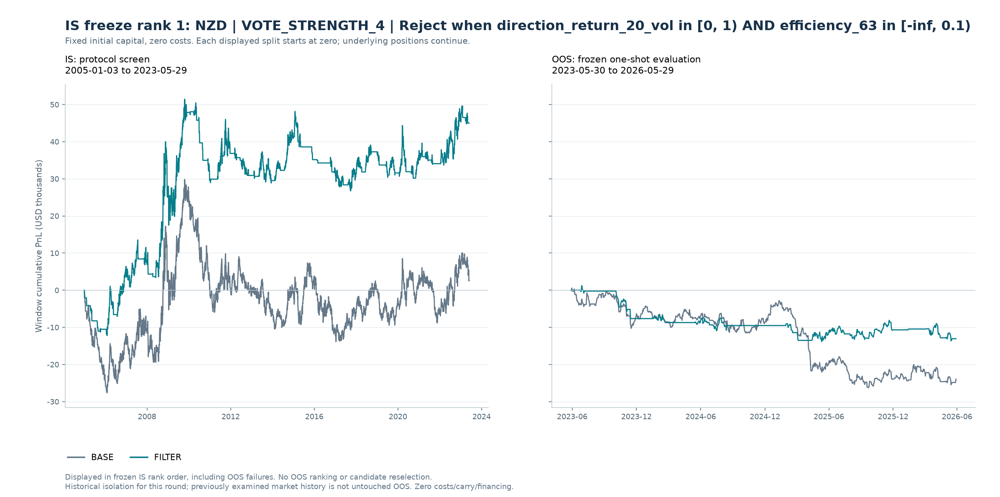
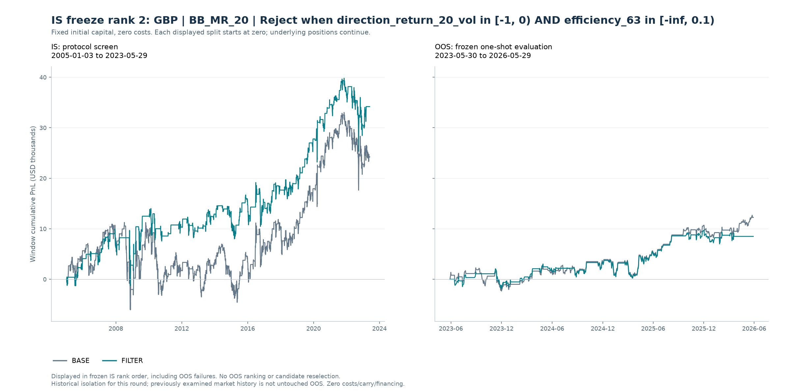

先筛选，再冻结，再评估
当前状态：已按冻结集合完成 OOS 一次评估；本轮 2 个冻结候选中，0 个满足预写 OOS 曲线标准。另有 0 个通过交易质量确认，同时满足两者的为 0 个。本轮目标尚未达成；交易质量单项确认不能替代曲线标准。
预写协议 SHA-256：fa1026caade32e10eeac0713128fa5316af53dbc9d77e252750d3aa66be8a6ea
冻结集合 SHA-256：dfa29078e270ab46981aa0ba559f16f37b1035cda765c7f0adab93884e12102b
freeze_rank 排序。OOS 收益、胜率、回撤或最终成败均不参与候选选择、图册顺序或展示取舍。报告不把历史隔离声称为全新的未触碰样本外证据。IS 综合门槛（需同时满足）
- IS 简单年化至少 1%
- IS 累计收益比 BASE 至少改善 5 pp
- IS 交易胜率至少改善 2 pp
- IS 盈亏比至少相对提高 10%
- IS 最大回撤恶化不超过 2 pp
- IS 至少 50 笔合格已平仓交易
- IS 合格已平仓交易保留比例至少 50%
- IS 三个预设分段中至少 2 段正收益
- IS 三个预设分段中至少 2 段优于 BASE
- 最后一个 IS 分段必须同时正收益且优于 BASE
- IS 收益 / 回撤比必须优于 BASE：累计单利收益除以最大回撤的绝对值；零回撤边界按预写筛选实现处理
冻结后评价 OOS 的预写曲线标准
- OOS 简单年化至少 1%
- OOS 累计收益比 BASE 至少改善 0 pp
- OOS 最大回撤不低于 -15 pp
- 三个 OOS 周年区间中至少 2 段正收益
- OOS 至少 10 笔合格已平仓交易
交易质量另行确认：OOS 的胜率和盈亏比均不劣于 BASE，且至少有 20 笔合格已平仓交易。该确认不授权根据 OOS 修改阈值或重选候选。
IS 预写综合标准原记录
| min_gross_annualized_simple_pct | 1.00 |
|---|---|
| min_return_improvement_pp | 5.00 |
| min_win_rate_improvement_pp | 2.00 |
| min_payoff_relative_improvement | 0.10 |
| max_drawdown_deterioration_pp | 2.00 |
| return_to_drawdown_must_improve | 是 |
| min_closed_trades | 50 |
| min_closed_retention | 0.50 |
| min_positive_is_blocks | 2 |
| min_improved_is_blocks | 2 |
| last_is_block_positive_and_improved | 是 |
| one_way_cost_bp | 0.00 |
| cost_sensitivity_evaluated | 否 |
| cost_instruction | User explicitly requested no costs for this round. |
| rank | ["gross_return_improvement_pp DESC", "payoff_absolute_improvement DESC", "win_rate_improvement_pp DESC", "candidate_id ASC"] |
| freeze | One highest IS-ranked passing NEW filter per pair/strategy. All passing versions retained in IS table. |
| schedule_delay_is_diagnostic_only | 是 |
OOS 预写评价标准原记录（不用于重选）
| min_net_annualized_simple_pct | 1.00 |
|---|---|
| min_net_return_improvement_pp | 0.00 |
| worst_net_drawdown_pp | -15.00 |
| min_positive_anniversary_years | 2 |
| min_closed_trades | 10 |
| quality_confirmation | Separately report whether both gross trade win rate and payoff are no worse than BASE, with >=20 closed trades. Not a license to tune on OOS. |
比较口径：固定本金单利，零成本
每个独立账户使用固定初始本金 $100,000。日 PnL 为固定本金乘实际持仓方向及现货日收益，逐日相加。本轮不计交易成本、carry、融资或现金利息。简单年化为区间单利收益除以实际日历年数，不是 CAGR。
IS 与 OOS 图形分别重置累计 PnL 为零；这只是显示归零，不能解释为在分界日清仓或重新训练。跨界持仓在 OOS 内发生的日收益仍进入 OOS 账户表现。最大回撤以初始本金百分点表示。交易胜率、盈亏比与已平仓数仅覆盖区间内开仓且在区间末前真实平仓、至少获得一个收益观测的交易；跨界持仓和期末未平仓交易另列。保留比例为 FILTER 合格已平仓数除以同区间 BASE 数量。
少于 20 笔合格已平仓交易标为低样本；OOS 曲线标准与额外交易质量确认分别列示。未定义统计显示“—”，不代表零。全部数值与冻结标准均来自计算模块，报告不重选阈值或补造 OOS。
完整冻结清单：固定 IS 顺序
IS 共评估 267 个规则 / 币种 / filter 组合；综合通过 2 个。 每个币种 / 技术规则最多冻结一个 IS 排名最高的新增达标 filter。其他通过版本和未通过版本保留在完整 IS 表，不凭 OOS 替换冻结者。
| IS 冻结顺序 | 冻结候选 | 币种 | 技术规则 | 过滤条件 |
|---|---|---|---|---|
| 1.00 | NZD|VOTE_STRENGTH_4|AND_direction_return_20_vol_2__efficiency_63_0 | NZD | VOTE_STRENGTH_4 | Reject when direction_return_20_vol in [0, 1) AND efficiency_63 in [-inf, 0.1) |
| 2.00 | GBP|BB_MR_20|AND_direction_return_20_vol_1__efficiency_63_0 | GBP | BB_MR_20 | Reject when direction_return_20_vol in [-1, 0) AND efficiency_63 in [-inf, 0.1) |
全部冻结候选的 IS / OOS 结果
以下保持原 IS 冻结顺序，包含 OOS 未通过者；不按 OOS 盈亏排序。
| IS 冻结顺序 | 币种 | 技术规则 | 过滤条件 | IS FILTER 累计 % | OOS FILTER 累计 % | OOS BASE 累计 % | 预写OOS曲线标准 | OOS交易质量确认 |
|---|---|---|---|---|---|---|---|---|
| 1.00 | NZD | VOTE_STRENGTH_4 | Reject when direction_return_20_vol in [0, 1) AND efficiency_63 in [-inf, 0.1) | 45.00 | -13.06 | -23.97 | 否 | 否 |
| 2.00 | GBP | BB_MR_20 | Reject when direction_return_20_vol in [-1, 0) AND efficiency_63 in [-inf, 0.1) | 34.19 | 8.49 | 12.24 | 否 | 否 |
完整 IS 筛选记录：含未通过与通过但未冻结版本
| 冻结候选 | 币种 | 技术规则 | 过滤条件 | 新增过滤版本 | IS 综合通过 | 已冻结 | IS 冻结顺序 | IS单利累计 % | IS收益改善 pp | IS胜率改善 pp | IS盈亏比相对改善 % | IS已平仓数 | 已平仓交易保留比例 % | IS未通过项目 |
|---|---|---|---|---|---|---|---|---|---|---|---|---|---|---|
| CHF|TSMOM_63|AND_direction_return_20_vol_2__efficiency_63_0 | CHF | TSMOM_63 | Reject when direction_return_20_vol in [0, 1) AND efficiency_63 in [-inf, 0.1) | 是 | 否 | 否 | — | -13.30 | 62.43 | 5.84 | 7.51 | 164 | 56.36 | positive_and_annualized_pass|payoff_pass|block_positive_pass |
| SEK|MA_10_30|AND_efficiency_63_0__vol_ratio_20_63_2 | SEK | MA_10_30 | Reject when efficiency_63 in [-inf, 0.1) AND vol_ratio_20_63 in [1, 1.25) | 是 | 否 | 否 | — | 33.66 | 54.84 | 2.79 | 17.35 | 133 | 73.48 | block_positive_pass|block_improvement_pass |
| SEK|TSMOM_63|AND_direction_return_20_vol_3__efficiency_63_0 | SEK | TSMOM_63 | Reject when direction_return_20_vol in [1, inf) AND efficiency_63 in [-inf, 0.1) | 是 | 否 | 否 | — | 9.09 | 45.30 | 2.06 | 13.75 | 254 | 83.28 | positive_and_annualized_pass |
| GBP|VOTE_EQUAL_4|AND_direction_return_20_vol_2__efficiency_63_1 | GBP | VOTE_EQUAL_4 | Reject when direction_return_20_vol in [0, 1) AND efficiency_63 in [0.1, 0.2) | 是 | 否 | 否 | — | -8.26 | 44.97 | 0.74 | 20.97 | 210 | 73.17 | positive_and_annualized_pass|win_rate_pass|block_positive_pass |
| NOK|MACD_12_26_9|AND_direction_return_20_vol_2__efficiency_63_1 | NOK | MACD_12_26_9 | Reject when direction_return_20_vol in [0, 1) AND efficiency_63 in [0.1, 0.2) | 是 | 否 | 否 | — | 17.26 | 44.35 | 4.37 | -4.77 | 342 | 86.15 | positive_and_annualized_pass|payoff_pass |
| NZD|VOTE_STRENGTH_4|AND_direction_return_20_vol_2__efficiency_63_0 | NZD | VOTE_STRENGTH_4 | Reject when direction_return_20_vol in [0, 1) AND efficiency_63 in [-inf, 0.1) | 是 | 是 | 是 | 1.00 | 45.00 | 42.40 | 2.02 | 23.40 | 148 | 54.01 | — |
| GBP|DONCHIAN_BO_20|AND_direction_return_20_vol_2__efficiency_63_1 | GBP | DONCHIAN_BO_20 | Reject when direction_return_20_vol in [0, 1) AND efficiency_63 in [0.1, 0.2) | 是 | 否 | 否 | — | -7.57 | 41.44 | 1.04 | 19.56 | 159 | 67.09 | positive_and_annualized_pass|win_rate_pass|block_positive_pass |
| CHF|MACD_12_26_9|AND_efficiency_63_1__vol_ratio_20_63_1 | CHF | MACD_12_26_9 | Reject when efficiency_63 in [0.1, 0.2) AND vol_ratio_20_63 in [0.8, 1) | 是 | 否 | 否 | — | 31.34 | 40.62 | 0.80 | 15.30 | 327 | 86.28 | win_rate_pass|block_positive_pass|block_improvement_pass |
| NOK|VOTE_EQUAL_4|AND_direction_return_20_vol_2__efficiency_63_0 | NOK | VOTE_EQUAL_4 | Reject when direction_return_20_vol in [0, 1) AND efficiency_63 in [-inf, 0.1) | 是 | 否 | 否 | — | -0.07 | 40.24 | 1.39 | 10.04 | 159 | 54.08 | positive_and_annualized_pass|win_rate_pass|block_improvement_pass |
| NOK|VOTE_STRENGTH_4|AND_efficiency_63_0__vol_ratio_20_63_2 | NOK | VOTE_STRENGTH_4 | Reject when efficiency_63 in [-inf, 0.1) AND vol_ratio_20_63 in [1, 1.25) | 是 | 否 | 否 | — | 7.14 | 39.91 | 1.66 | 11.44 | 182 | 71.09 | positive_and_annualized_pass|win_rate_pass|block_improvement_pass |
| NOK|VOTE_STRENGTH_4|AND_direction_return_20_vol_2__efficiency_63_0 | NOK | VOTE_STRENGTH_4 | Reject when direction_return_20_vol in [0, 1) AND efficiency_63 in [-inf, 0.1) | 是 | 否 | 否 | — | 6.76 | 39.52 | 0.30 | 18.35 | 141 | 55.08 | positive_and_annualized_pass|win_rate_pass |
| SEK|VOTE_STRENGTH_4|AND_efficiency_63_0__vol_ratio_20_63_2 | SEK | VOTE_STRENGTH_4 | Reject when efficiency_63 in [-inf, 0.1) AND vol_ratio_20_63 in [1, 1.25) | 是 | 否 | 否 | — | 13.68 | 38.61 | 0.29 | 19.87 | 196 | 71.01 | positive_and_annualized_pass|win_rate_pass |
| SEK|TSMOM_63|AND_efficiency_63_0__vol_ratio_20_63_2 | SEK | TSMOM_63 | Reject when efficiency_63 in [-inf, 0.1) AND vol_ratio_20_63 in [1, 1.25) | 是 | 否 | 否 | — | 0.27 | 36.48 | -1.41 | 24.43 | 174 | 57.05 | positive_and_annualized_pass|win_rate_pass |
| GBP|TSMOM_21|AND_direction_return_20_vol_2__efficiency_63_1 | GBP | TSMOM_21 | Reject when direction_return_20_vol in [0, 1) AND efficiency_63 in [0.1, 0.2) | 是 | 否 | 否 | — | 14.01 | 36.02 | 1.47 | 11.25 | 350 | 73.84 | positive_and_annualized_pass|win_rate_pass|block_positive_pass |
| NOK|MA_10_30|AND_efficiency_63_0__vol_ratio_20_63_2 | NOK | MA_10_30 | Reject when efficiency_63 in [-inf, 0.1) AND vol_ratio_20_63 in [1, 1.25) | 是 | 否 | 否 | — | 8.70 | 35.98 | 2.48 | 4.34 | 152 | 76.38 | positive_and_annualized_pass|payoff_pass |
| AUD|TSMOM_63|AND_efficiency_63_0__vol_ratio_20_63_2 | AUD | TSMOM_63 | Reject when efficiency_63 in [-inf, 0.1) AND vol_ratio_20_63 in [1, 1.25) | 是 | 否 | 否 | — | 13.15 | 35.73 | 3.12 | 6.07 | 210 | 66.25 | positive_and_annualized_pass|payoff_pass |
| NOK|VOTE_STRENGTH_4|AND_efficiency_63_0__vol_ratio_20_63_1 | NOK | VOTE_STRENGTH_4 | Reject when efficiency_63 in [-inf, 0.1) AND vol_ratio_20_63 in [0.8, 1) | 是 | 否 | 否 | — | 2.71 | 35.47 | -0.71 | 20.36 | 180 | 70.31 | positive_and_annualized_pass|win_rate_pass|block_positive_pass |
| CHF|MA_10_30|AND_efficiency_63_0__vol_ratio_20_63_2 | CHF | MA_10_30 | Reject when efficiency_63 in [-inf, 0.1) AND vol_ratio_20_63 in [1, 1.25) | 是 | 否 | 否 | — | -42.64 | 33.56 | 1.70 | 5.14 | 152 | 74.88 | positive_and_annualized_pass|win_rate_pass|payoff_pass|block_positive_pass |
| GBP|DONCHIAN_BO_10|AND_direction_return_20_vol_2__efficiency_63_1 | GBP | DONCHIAN_BO_10 | Reject when direction_return_20_vol in [0, 1) AND efficiency_63 in [0.1, 0.2) | 是 | 否 | 否 | — | 0.62 | 33.37 | 1.26 | 8.63 | 363 | 84.42 | positive_and_annualized_pass|win_rate_pass|payoff_pass|block_positive_pass |
| SEK|TSMOM_63|AND_direction_return_20_vol_1__efficiency_63_0 | SEK | TSMOM_63 | Reject when direction_return_20_vol in [-1, 0) AND efficiency_63 in [-inf, 0.1) | 是 | 否 | 否 | — | -4.15 | 32.05 | -0.66 | 17.89 | 205 | 67.21 | positive_and_annualized_pass|win_rate_pass |
| GBP|RSI_MOM_7|AND_direction_return_20_vol_2__efficiency_63_1 | GBP | RSI_MOM_7 | Reject when direction_return_20_vol in [0, 1) AND efficiency_63 in [0.1, 0.2) | 是 | 否 | 否 | — | -12.45 | 31.79 | 1.12 | 7.72 | 572 | 81.83 | positive_and_annualized_pass|win_rate_pass|payoff_pass|block_positive_pass |
| NOK|MACD_12_26_9|AND_efficiency_63_1__vol_ratio_20_63_1 | NOK | MACD_12_26_9 | Reject when efficiency_63 in [0.1, 0.2) AND vol_ratio_20_63 in [0.8, 1) | 是 | 否 | 否 | — | 3.98 | 31.08 | 1.15 | 4.57 | 342 | 86.15 | positive_and_annualized_pass|win_rate_pass|payoff_pass|block_positive_pass |
| NOK|DONCHIAN_BO_10|AND_direction_return_20_vol_2__efficiency_63_0 | NOK | DONCHIAN_BO_10 | Reject when direction_return_20_vol in [0, 1) AND efficiency_63 in [-inf, 0.1) | 是 | 否 | 否 | — | -40.09 | 31.04 | -0.25 | 6.75 | 327 | 75.35 | positive_and_annualized_pass|win_rate_pass|payoff_pass|block_positive_pass |
| CHF|TSMOM_21|AND_direction_return_20_vol_2__efficiency_63_0 | CHF | TSMOM_21 | Reject when direction_return_20_vol in [0, 1) AND efficiency_63 in [-inf, 0.1) | 是 | 否 | 否 | — | -21.64 | 30.92 | 1.38 | 0.28 | 270 | 57.45 | positive_and_annualized_pass|win_rate_pass|payoff_pass |
| CHF|MA_10_30|AND_direction_return_20_vol_2__efficiency_63_1 | CHF | MA_10_30 | Reject when direction_return_20_vol in [0, 1) AND efficiency_63 in [0.1, 0.2) | 是 | 否 | 否 | — | -45.44 | 30.77 | 2.23 | 0.85 | 158 | 77.83 | positive_and_annualized_pass|payoff_pass|block_positive_pass |
| JPY|DONCHIAN_BO_20|AND_direction_return_20_vol_2__efficiency_63_0 | JPY | DONCHIAN_BO_20 | Reject when direction_return_20_vol in [0, 1) AND efficiency_63 in [-inf, 0.1) | 是 | 否 | 否 | — | 34.69 | 30.61 | 3.12 | 22.55 | 107 | 49.54 | sample_pass |
| CHF|VOTE_STRENGTH_4|AND_efficiency_63_0__vol_ratio_20_63_2 | CHF | VOTE_STRENGTH_4 | Reject when efficiency_63 in [-inf, 0.1) AND vol_ratio_20_63 in [1, 1.25) | 是 | 否 | 否 | — | -32.78 | 30.56 | 0.28 | 9.70 | 192 | 69.31 | positive_and_annualized_pass|win_rate_pass|payoff_pass|block_positive_pass |
| SEK|RSI_MOM_7|AND_efficiency_63_1__vol_ratio_20_63_2 | SEK | RSI_MOM_7 | Reject when efficiency_63 in [0.1, 0.2) AND vol_ratio_20_63 in [1, 1.25) | 是 | 否 | 否 | — | 33.09 | 29.77 | 1.07 | 7.24 | 622 | 87.61 | win_rate_pass|payoff_pass|block_positive_pass|block_improvement_pass |
| GBP|MACD_12_26_9|AND_direction_dxy_d20_pct_3__direction_spread_bp_1 | GBP | MACD_12_26_9 | Reject when direction_dxy_d20_pct in [1, inf) AND direction_spread_bp in [-100, 0) | 是 | 否 | 否 | — | 32.90 | 29.59 | 2.22 | 4.01 | 319 | 83.07 | payoff_pass|block_positive_pass|block_improvement_pass |
| NOK|TSMOM_21|AND_efficiency_63_0__vol_ratio_20_63_2 | NOK | TSMOM_21 | Reject when efficiency_63 in [-inf, 0.1) AND vol_ratio_20_63 in [1, 1.25) | 是 | 否 | 否 | — | 46.05 | 29.05 | 1.81 | 4.95 | 387 | 77.56 | win_rate_pass|payoff_pass|block_improvement_pass |
| CHF|VOTE_EQUAL_4|AND_efficiency_63_0__vol_ratio_20_63_2 | CHF | VOTE_EQUAL_4 | Reject when efficiency_63 in [-inf, 0.1) AND vol_ratio_20_63 in [1, 1.25) | 是 | 否 | 否 | — | -15.84 | 29.02 | 1.89 | 4.40 | 227 | 77.47 | positive_and_annualized_pass|win_rate_pass|payoff_pass|block_positive_pass |
| NOK|RSI_MOM_7|AND_efficiency_63_1__vol_ratio_20_63_1 | NOK | RSI_MOM_7 | Reject when efficiency_63 in [0.1, 0.2) AND vol_ratio_20_63 in [0.8, 1) | 是 | 否 | 否 | — | -11.36 | 27.72 | 1.54 | 2.33 | 605 | 87.43 | positive_and_annualized_pass|win_rate_pass|payoff_pass |
| EUR|MA_20_60|AND_direction_return_20_vol_3__efficiency_63_0 | EUR | MA_20_60 | Reject when direction_return_20_vol in [1, inf) AND efficiency_63 in [-inf, 0.1) | 是 | 否 | 否 | — | 45.96 | 27.59 | 2.05 | 43.88 | 57 | 60.64 | block_positive_pass|block_improvement_pass |
| AUD|TSMOM_63|AND_direction_return_20_vol_2__efficiency_63_0 | AUD | TSMOM_63 | Reject when direction_return_20_vol in [0, 1) AND efficiency_63 in [-inf, 0.1) | 是 | 否 | 否 | — | 5.00 | 27.58 | 3.62 | 0.29 | 190 | 59.94 | positive_and_annualized_pass|payoff_pass|block_positive_pass|block_improvement_pass |
| NOK|MACD_12_26_9|AND_efficiency_63_0__vol_ratio_20_63_2 | NOK | MACD_12_26_9 | Reject when efficiency_63 in [-inf, 0.1) AND vol_ratio_20_63 in [1, 1.25) | 是 | 否 | 否 | — | -1.33 | 25.76 | 0.68 | 4.21 | 322 | 81.11 | positive_and_annualized_pass|win_rate_pass|payoff_pass|block_positive_pass|block_improvement_pass |
| CAD|MA_10_30|AND_direction_return_20_vol_2__efficiency_63_0 | CAD | MA_10_30 | Reject when direction_return_20_vol in [0, 1) AND efficiency_63 in [-inf, 0.1) | 是 | 否 | 否 | — | 21.13 | 25.47 | 3.70 | 11.54 | 114 | 59.38 | block_positive_pass|block_improvement_pass |
| NOK|DONCHIAN_BO_20|AND_direction_return_20_vol_2__efficiency_63_0 | NOK | DONCHIAN_BO_20 | Reject when direction_return_20_vol in [0, 1) AND efficiency_63 in [-inf, 0.1) | 是 | 否 | 否 | — | -9.54 | 25.19 | -2.35 | 19.24 | 115 | 50.88 | positive_and_annualized_pass|win_rate_pass|block_positive_pass|block_improvement_pass |
| CAD|VOTE_EQUAL_4|AND_direction_return_20_vol_2__efficiency_63_0 | CAD | VOTE_EQUAL_4 | Reject when direction_return_20_vol in [0, 1) AND efficiency_63 in [-inf, 0.1) | 是 | 否 | 否 | — | 7.46 | 24.90 | 3.81 | 3.49 | 153 | 52.94 | positive_and_annualized_pass|payoff_pass|block_improvement_pass |
| CHF|MACD_12_26_9|AND_direction_dxy_d20_pct_3__direction_spread_bp_2 | CHF | MACD_12_26_9 | Reject when direction_dxy_d20_pct in [1, inf) AND direction_spread_bp in [0, 100) | 是 | 否 | 否 | — | 15.35 | 24.63 | 1.19 | 5.07 | 352 | 92.88 | positive_and_annualized_pass|win_rate_pass|payoff_pass|block_positive_pass |
| CAD|DONCHIAN_BO_20|AND_direction_return_20_vol_2__efficiency_63_0 | CAD | DONCHIAN_BO_20 | Reject when direction_return_20_vol in [0, 1) AND efficiency_63 in [-inf, 0.1) | 是 | 否 | 否 | — | 0.76 | 23.31 | 0.71 | 14.49 | 105 | 47.51 | positive_and_annualized_pass|win_rate_pass|sample_pass|block_positive_pass|block_improvement_pass |
| JPY|VOTE_STRENGTH_4|AND_efficiency_63_0__vol_ratio_20_63_2 | JPY | VOTE_STRENGTH_4 | Reject when efficiency_63 in [-inf, 0.1) AND vol_ratio_20_63 in [1, 1.25) | 是 | 否 | 否 | — | 13.90 | 23.24 | 0.71 | 10.68 | 229 | 82.37 | positive_and_annualized_pass|win_rate_pass |
| CAD|MACD_12_26_9|AND_direction_dxy_d20_pct_3__direction_spread_bp_2 | CAD | MACD_12_26_9 | Reject when direction_dxy_d20_pct in [1, inf) AND direction_spread_bp in [0, 100) | 是 | 否 | 否 | — | 6.89 | 22.91 | 1.67 | 3.86 | 322 | 83.20 | positive_and_annualized_pass|win_rate_pass|payoff_pass |
| EUR|RSI_MOM_20|AND_direction_return_20_vol_3__efficiency_63_0 | EUR | RSI_MOM_20 | Reject when direction_return_20_vol in [1, inf) AND efficiency_63 in [-inf, 0.1) | 是 | 否 | 否 | — | 21.79 | 22.39 | 3.58 | 10.59 | 208 | 75.64 | block_improvement_pass |
| CHF|RSI_MOM_14|AND_direction_dxy_d20_pct_0__direction_spread_bp_2 | CHF | RSI_MOM_14 | Reject when direction_dxy_d20_pct in [-inf, -1) AND direction_spread_bp in [0, 100) | 是 | 否 | 否 | — | -22.73 | 22.38 | 0.25 | 10.95 | 359 | 89.75 | positive_and_annualized_pass|win_rate_pass|block_positive_pass |
| CAD|TSMOM_21|AND_direction_return_20_vol_2__efficiency_63_0 | CAD | TSMOM_21 | Reject when direction_return_20_vol in [0, 1) AND efficiency_63 in [-inf, 0.1) | 是 | 否 | 否 | — | 8.71 | 22.35 | 3.74 | -2.79 | 270 | 54.55 | positive_and_annualized_pass|payoff_pass|block_positive_pass|block_improvement_pass |
| NOK|VOTE_EQUAL_4|AND_direction_return_20_vol_2__efficiency_63_1 | NOK | VOTE_EQUAL_4 | Reject when direction_return_20_vol in [0, 1) AND efficiency_63 in [0.1, 0.2) | 是 | 否 | 否 | — | -18.12 | 22.20 | 1.62 | 0.37 | 225 | 76.53 | positive_and_annualized_pass|win_rate_pass|payoff_pass|block_positive_pass|block_improvement_pass |
| CAD|DONCHIAN_BO_10|AND_direction_return_20_vol_1__efficiency_63_0 | CAD | DONCHIAN_BO_10 | Reject when direction_return_20_vol in [-1, 0) AND efficiency_63 in [-inf, 0.1) | 是 | 否 | 否 | — | -4.15 | 21.90 | 0.05 | 10.23 | 343 | 80.14 | positive_and_annualized_pass|win_rate_pass|block_improvement_pass |
| NOK|RSI_MOM_14|AND_efficiency_63_1__vol_ratio_20_63_1 | NOK | RSI_MOM_14 | Reject when efficiency_63 in [0.1, 0.2) AND vol_ratio_20_63 in [0.8, 1) | 是 | 否 | 否 | — | 12.70 | 21.84 | 1.53 | 6.71 | 358 | 86.47 | positive_and_annualized_pass|win_rate_pass|payoff_pass |
| GBP|VOTE_STRENGTH_4|AND_direction_return_20_vol_2__efficiency_63_1 | GBP | VOTE_STRENGTH_4 | Reject when direction_return_20_vol in [0, 1) AND efficiency_63 in [0.1, 0.2) | 是 | 否 | 否 | — | -20.62 | 21.34 | 0.44 | 7.13 | 233 | 82.33 | positive_and_annualized_pass|win_rate_pass|payoff_pass|block_positive_pass |
| NOK|DONCHIAN_BO_10|AND_efficiency_63_0__vol_ratio_20_63_2 | NOK | DONCHIAN_BO_10 | Reject when efficiency_63 in [-inf, 0.1) AND vol_ratio_20_63 in [1, 1.25) | 是 | 否 | 否 | — | -50.09 | 21.04 | 1.03 | -0.95 | 355 | 81.80 | positive_and_annualized_pass|win_rate_pass|payoff_pass|block_positive_pass|block_improvement_pass |
| NOK|VOTE_EQUAL_4|AND_efficiency_63_0__vol_ratio_20_63_2 | NOK | VOTE_EQUAL_4 | Reject when efficiency_63 in [-inf, 0.1) AND vol_ratio_20_63 in [1, 1.25) | 是 | 否 | 否 | — | -19.31 | 21.01 | 0.00 | 6.29 | 224 | 76.19 | positive_and_annualized_pass|win_rate_pass|payoff_pass|block_positive_pass|block_improvement_pass |
| NOK|TSMOM_21|AND_efficiency_63_1__vol_ratio_20_63_1 | NOK | TSMOM_21 | Reject when efficiency_63 in [0.1, 0.2) AND vol_ratio_20_63 in [0.8, 1) | 是 | 否 | 否 | — | 37.89 | 20.89 | 0.29 | 8.28 | 423 | 84.77 | win_rate_pass|payoff_pass |
| EUR|RSI_MOM_14|AND_direction_return_20_vol_3__efficiency_63_0 | EUR | RSI_MOM_14 | Reject when direction_return_20_vol in [1, inf) AND efficiency_63 in [-inf, 0.1) | 是 | 否 | 否 | — | 15.34 | 20.81 | -0.69 | 19.77 | 328 | 80.99 | positive_and_annualized_pass|win_rate_pass|block_improvement_pass |
| NZD|VOTE_STRENGTH_4|AND_efficiency_63_0__vol_ratio_20_63_2 | NZD | VOTE_STRENGTH_4 | Reject when efficiency_63 in [-inf, 0.1) AND vol_ratio_20_63 in [1, 1.25) | 是 | 否 | 否 | — | 23.27 | 20.67 | 0.76 | 8.79 | 204 | 74.45 | win_rate_pass|payoff_pass |
| CHF|RSI_MOM_7|AND_efficiency_63_0__vol_ratio_20_63_2 | CHF | RSI_MOM_7 | Reject when efficiency_63 in [-inf, 0.1) AND vol_ratio_20_63 in [1, 1.25) | 是 | 否 | 否 | — | -10.46 | 20.34 | 0.16 | 6.89 | 538 | 81.27 | positive_and_annualized_pass|win_rate_pass|payoff_pass|block_positive_pass |
| SEK|RSI_MOM_14|AND_efficiency_63_0__vol_ratio_20_63_2 | SEK | RSI_MOM_14 | Reject when efficiency_63 in [-inf, 0.1) AND vol_ratio_20_63 in [1, 1.25) | 是 | 否 | 否 | — | 9.50 | 20.25 | -0.44 | 14.15 | 306 | 76.31 | positive_and_annualized_pass|win_rate_pass |
| CAD|MACD_12_26_9|AND_efficiency_63_1__vol_ratio_20_63_1 | CAD | MACD_12_26_9 | Reject when efficiency_63 in [0.1, 0.2) AND vol_ratio_20_63 in [0.8, 1) | 是 | 否 | 否 | — | 4.11 | 20.14 | 1.68 | 2.14 | 344 | 88.89 | positive_and_annualized_pass|win_rate_pass|payoff_pass |
| AUD|TSMOM_21|AND_direction_dxy_d20_pct_3__direction_spread_bp_0 | AUD | TSMOM_21 | Reject when direction_dxy_d20_pct in [1, inf) AND direction_spread_bp in [-inf, -100) | 是 | 否 | 否 | — | 60.44 | 19.92 | 0.55 | 5.92 | 445 | 92.52 | win_rate_pass|payoff_pass |
| JPY|RSI_MOM_14|AND_efficiency_63_0__vol_ratio_20_63_1 | JPY | RSI_MOM_14 | Reject when efficiency_63 in [-inf, 0.1) AND vol_ratio_20_63 in [0.8, 1) | 是 | 否 | 否 | — | 14.91 | 19.76 | 1.50 | 5.68 | 334 | 84.13 | positive_and_annualized_pass|win_rate_pass|payoff_pass |
| NOK|VOTE_EQUAL_4|AND_efficiency_63_0__vol_ratio_20_63_1 | NOK | VOTE_EQUAL_4 | Reject when efficiency_63 in [-inf, 0.1) AND vol_ratio_20_63 in [0.8, 1) | 是 | 否 | 否 | — | -20.82 | 19.49 | 0.09 | 4.81 | 229 | 77.89 | positive_and_annualized_pass|win_rate_pass|payoff_pass|block_positive_pass |
| NOK|RSI_MOM_14|AND_direction_return_20_vol_3__efficiency_63_1 | NOK | RSI_MOM_14 | Reject when direction_return_20_vol in [1, inf) AND efficiency_63 in [0.1, 0.2) | 是 | 否 | 否 | — | 10.25 | 19.39 | 1.00 | 6.19 | 369 | 89.13 | positive_and_annualized_pass|win_rate_pass|payoff_pass |
| JPY|RSI_MOM_7|AND_direction_return_20_vol_2__efficiency_63_2 | JPY | RSI_MOM_7 | Reject when direction_return_20_vol in [0, 1) AND efficiency_63 in [0.2, 0.4) | 是 | 否 | 否 | — | -2.88 | 19.23 | 0.26 | 6.28 | 618 | 91.02 | positive_and_annualized_pass|win_rate_pass|payoff_pass|block_positive_pass |
| NZD|TSMOM_21|AND_direction_return_20_vol_2__efficiency_63_0 | NZD | TSMOM_21 | Reject when direction_return_20_vol in [0, 1) AND efficiency_63 in [-inf, 0.1) | 是 | 否 | 否 | — | 19.42 | 19.07 | 1.13 | 6.08 | 281 | 56.20 | win_rate_pass|payoff_pass |
| CAD|TSMOM_21|AND_direction_dxy_d20_pct_3__direction_spread_bp_1 | CAD | TSMOM_21 | Reject when direction_dxy_d20_pct in [1, inf) AND direction_spread_bp in [-100, 0) | 是 | 否 | 否 | — | 5.24 | 18.88 | 0.18 | 8.45 | 440 | 88.89 | positive_and_annualized_pass|win_rate_pass|payoff_pass |
| GBP|DONCHIAN_BO_10|AND_direction_dxy_d20_pct_1__direction_spread_bp_2 | GBP | DONCHIAN_BO_10 | Reject when direction_dxy_d20_pct in [-1, 0) AND direction_spread_bp in [0, 100) | 是 | 否 | 否 | — | -14.06 | 18.68 | 0.86 | 3.66 | 395 | 91.86 | positive_and_annualized_pass|win_rate_pass|payoff_pass |
| SEK|BB_BO_10|AND_efficiency_63_0__vol_ratio_20_63_2 | SEK | BB_BO_10 | Reject when efficiency_63 in [-inf, 0.1) AND vol_ratio_20_63 in [1, 1.25) | 是 | 否 | 否 | — | -24.66 | 18.67 | 0.37 | 8.36 | 160 | 80.00 | positive_and_annualized_pass|win_rate_pass|payoff_pass|block_positive_pass|block_improvement_pass |
| GBP|MA_10_30|AND_direction_return_20_vol_2__efficiency_63_1 | GBP | MA_10_30 | Reject when direction_return_20_vol in [0, 1) AND efficiency_63 in [0.1, 0.2) | 是 | 否 | 否 | — | 10.29 | 18.59 | 4.01 | -4.54 | 134 | 70.90 | positive_and_annualized_pass|payoff_pass |
| SEK|RSI_MOM_20|AND_direction_dxy_d20_pct_0__direction_spread_bp_1 | SEK | RSI_MOM_20 | Reject when direction_dxy_d20_pct in [-inf, -1) AND direction_spread_bp in [-100, 0) | 是 | 否 | 否 | — | -4.82 | 18.56 | 1.02 | 8.14 | 261 | 88.18 | positive_and_annualized_pass|win_rate_pass|payoff_pass|block_positive_pass|block_improvement_pass |
| JPY|DONCHIAN_BO_10|AND_efficiency_63_0__vol_ratio_20_63_2 | JPY | DONCHIAN_BO_10 | Reject when efficiency_63 in [-inf, 0.1) AND vol_ratio_20_63 in [1, 1.25) | 是 | 否 | 否 | — | 15.47 | 18.55 | 0.65 | 6.82 | 348 | 87.22 | positive_and_annualized_pass|win_rate_pass|payoff_pass |
| CAD|RSI_MOM_7|AND_direction_dxy_d20_pct_1__direction_spread_bp_2 | CAD | RSI_MOM_7 | Reject when direction_dxy_d20_pct in [-1, 0) AND direction_spread_bp in [0, 100) | 是 | 否 | 否 | — | -11.23 | 18.24 | 0.85 | 3.86 | 623 | 88.49 | positive_and_annualized_pass|win_rate_pass|payoff_pass |
| NOK|DONCHIAN_BO_20|AND_direction_return_20_vol_2__efficiency_63_1 | NOK | DONCHIAN_BO_20 | Reject when direction_return_20_vol in [0, 1) AND efficiency_63 in [0.1, 0.2) | 是 | 否 | 否 | — | -16.51 | 18.22 | 2.26 | -3.36 | 162 | 71.68 | positive_and_annualized_pass|payoff_pass|block_positive_pass|block_improvement_pass |
| CHF|RSI_MOM_14|AND_efficiency_63_0__vol_ratio_20_63_2 | CHF | RSI_MOM_14 | Reject when efficiency_63 in [-inf, 0.1) AND vol_ratio_20_63 in [1, 1.25) | 是 | 否 | 否 | — | -26.97 | 18.14 | 0.09 | 8.44 | 327 | 81.75 | positive_and_annualized_pass|win_rate_pass|payoff_pass|block_positive_pass |
| NOK|DONCHIAN_BO_10|AND_efficiency_63_1__vol_ratio_20_63_1 | NOK | DONCHIAN_BO_10 | Reject when efficiency_63 in [0.1, 0.2) AND vol_ratio_20_63 in [0.8, 1) | 是 | 否 | 否 | — | -53.20 | 17.93 | 0.08 | 3.46 | 372 | 85.71 | positive_and_annualized_pass|win_rate_pass|payoff_pass|block_positive_pass|block_improvement_pass |
| EUR|RSI_MOM_7|AND_efficiency_63_2__vol_ratio_20_63_2 | EUR | RSI_MOM_7 | Reject when efficiency_63 in [0.2, 0.4) AND vol_ratio_20_63 in [1, 1.25) | 是 | 否 | 否 | — | 28.15 | 17.91 | 1.33 | 3.36 | 624 | 90.30 | win_rate_pass|payoff_pass |
| CAD|TSMOM_21|AND_efficiency_63_1__vol_ratio_20_63_2 | CAD | TSMOM_21 | Reject when efficiency_63 in [0.1, 0.2) AND vol_ratio_20_63 in [1, 1.25) | 是 | 否 | 否 | — | 4.20 | 17.83 | 0.36 | 7.61 | 413 | 83.43 | positive_and_annualized_pass|win_rate_pass|payoff_pass |
| CAD|MACD_12_26_9|AND_efficiency_63_0__vol_ratio_20_63_2 | CAD | MACD_12_26_9 | Reject when efficiency_63 in [-inf, 0.1) AND vol_ratio_20_63 in [1, 1.25) | 是 | 否 | 否 | — | 1.46 | 17.48 | 1.43 | 2.26 | 309 | 79.84 | positive_and_annualized_pass|win_rate_pass|payoff_pass |
| AUD|RSI_MOM_14|AND_direction_dxy_d20_pct_0__direction_spread_bp_3 | AUD | RSI_MOM_14 | Reject when direction_dxy_d20_pct in [-inf, -1) AND direction_spread_bp in [100, inf) | 是 | 否 | 否 | — | 11.87 | 17.46 | 0.73 | 6.42 | 382 | 87.82 | positive_and_annualized_pass|win_rate_pass|payoff_pass|block_positive_pass |
| CAD|VOTE_EQUAL_4|AND_direction_dxy_d20_pct_3__direction_spread_bp_1 | CAD | VOTE_EQUAL_4 | Reject when direction_dxy_d20_pct in [1, inf) AND direction_spread_bp in [-100, 0) | 是 | 否 | 否 | — | 0.01 | 17.45 | 1.56 | 4.38 | 262 | 90.66 | positive_and_annualized_pass|win_rate_pass|payoff_pass |
| CAD|RSI_MOM_7|AND_direction_return_20_vol_2__efficiency_63_1 | CAD | RSI_MOM_7 | Reject when direction_return_20_vol in [0, 1) AND efficiency_63 in [0.1, 0.2) | 是 | 否 | 否 | — | -12.18 | 17.28 | 0.63 | 3.76 | 581 | 82.53 | positive_and_annualized_pass|win_rate_pass|payoff_pass|block_positive_pass|block_improvement_pass |
| SEK|DONCHIAN_BO_10|AND_efficiency_63_1__vol_ratio_20_63_1 | SEK | DONCHIAN_BO_10 | Reject when efficiency_63 in [0.1, 0.2) AND vol_ratio_20_63 in [0.8, 1) | 是 | 否 | 否 | — | -3.84 | 17.25 | 0.20 | 4.90 | 361 | 86.99 | positive_and_annualized_pass|win_rate_pass|payoff_pass |
| GBP|VOTE_STRENGTH_4|AND_efficiency_63_0__vol_ratio_20_63_2 | GBP | VOTE_STRENGTH_4 | Reject when efficiency_63 in [-inf, 0.1) AND vol_ratio_20_63 in [1, 1.25) | 是 | 否 | 否 | — | -25.36 | 16.60 | -0.89 | 8.64 | 199 | 70.32 | positive_and_annualized_pass|win_rate_pass|payoff_pass|block_positive_pass|block_improvement_pass |
| NZD|TSMOM_63|AND_direction_return_20_vol_1__efficiency_63_0 | NZD | TSMOM_63 | Reject when direction_return_20_vol in [-1, 0) AND efficiency_63 in [-inf, 0.1) | 是 | 否 | 否 | — | 19.39 | 16.38 | 0.24 | 10.83 | 175 | 70.28 | win_rate_pass|block_positive_pass |
| GBP|VOTE_EQUAL_4|AND_efficiency_63_1__vol_ratio_20_63_1 | GBP | VOTE_EQUAL_4 | Reject when efficiency_63 in [0.1, 0.2) AND vol_ratio_20_63 in [0.8, 1) | 是 | 否 | 否 | — | -36.92 | 16.31 | 0.46 | 3.58 | 246 | 85.71 | positive_and_annualized_pass|win_rate_pass|payoff_pass|block_positive_pass|block_improvement_pass |
| SEK|VOTE_EQUAL_4|AND_direction_return_20_vol_2__efficiency_63_1 | SEK | VOTE_EQUAL_4 | Reject when direction_return_20_vol in [0, 1) AND efficiency_63 in [0.1, 0.2) | 是 | 否 | 否 | — | 11.18 | 16.29 | 2.12 | -0.89 | 209 | 77.99 | positive_and_annualized_pass|payoff_pass |
| SEK|RSI_MOM_14|AND_direction_return_20_vol_3__efficiency_63_0 | SEK | RSI_MOM_14 | Reject when direction_return_20_vol in [1, inf) AND efficiency_63 in [-inf, 0.1) | 是 | 否 | 否 | — | 5.45 | 16.19 | 0.45 | 7.05 | 322 | 80.30 | positive_and_annualized_pass|win_rate_pass|payoff_pass |
| JPY|VOTE_EQUAL_4|AND_direction_return_20_vol_2__efficiency_63_0 | JPY | VOTE_EQUAL_4 | Reject when direction_return_20_vol in [0, 1) AND efficiency_63 in [-inf, 0.1) | 是 | 否 | 否 | — | 37.74 | 16.16 | 3.46 | 8.50 | 161 | 57.71 | payoff_pass |
| JPY|RSI_MOM_14|AND_direction_return_20_vol_3__efficiency_63_0 | JPY | RSI_MOM_14 | Reject when direction_return_20_vol in [1, inf) AND efficiency_63 in [-inf, 0.1) | 是 | 否 | 否 | — | 10.97 | 15.81 | 1.55 | 3.02 | 350 | 88.16 | positive_and_annualized_pass|win_rate_pass|payoff_pass |
| JPY|MACD_12_26_9|AND_direction_return_20_vol_1__efficiency_63_0 | JPY | MACD_12_26_9 | Reject when direction_return_20_vol in [-1, 0) AND efficiency_63 in [-inf, 0.1) | 是 | 否 | 否 | — | 23.27 | 15.78 | -0.13 | 8.33 | 302 | 77.24 | win_rate_pass|payoff_pass |
| NZD|MACD_12_26_9|AND_efficiency_63_0__vol_ratio_20_63_2 | NZD | MACD_12_26_9 | Reject when efficiency_63 in [-inf, 0.1) AND vol_ratio_20_63 in [1, 1.25) | 是 | 否 | 否 | — | 23.63 | 15.26 | 1.15 | 1.23 | 312 | 80.41 | win_rate_pass|payoff_pass|block_improvement_pass |
| NOK|DONCHIAN_BO_20|AND_efficiency_63_0__vol_ratio_20_63_2 | NOK | DONCHIAN_BO_20 | Reject when efficiency_63 in [-inf, 0.1) AND vol_ratio_20_63 in [1, 1.25) | 是 | 否 | 否 | — | -19.50 | 15.23 | -0.95 | 9.04 | 180 | 79.65 | positive_and_annualized_pass|win_rate_pass|payoff_pass|block_improvement_pass |
| AUD|TSMOM_21|AND_direction_return_20_vol_1__efficiency_63_1 | AUD | TSMOM_21 | Reject when direction_return_20_vol in [-1, 0) AND efficiency_63 in [0.1, 0.2) | 是 | 否 | 否 | — | 55.66 | 15.13 | 0.05 | 5.96 | 439 | 91.27 | win_rate_pass|payoff_pass |
| SEK|RSI_MOM_7|AND_direction_return_20_vol_3__efficiency_63_1 | SEK | RSI_MOM_7 | Reject when direction_return_20_vol in [1, inf) AND efficiency_63 in [0.1, 0.2) | 是 | 否 | 否 | — | 18.39 | 15.07 | 1.08 | 1.05 | 660 | 92.96 | positive_and_annualized_pass|win_rate_pass|payoff_pass|block_improvement_pass |
| NZD|DONCHIAN_BO_20|AND_direction_return_20_vol_2__efficiency_63_0 | NZD | DONCHIAN_BO_20 | Reject when direction_return_20_vol in [0, 1) AND efficiency_63 in [-inf, 0.1) | 是 | 否 | 否 | — | -1.42 | 15.07 | -1.89 | 16.68 | 105 | 46.46 | positive_and_annualized_pass|win_rate_pass|sample_pass|block_positive_pass |
| JPY|VOTE_EQUAL_4|AND_efficiency_63_0__vol_ratio_20_63_1 | JPY | VOTE_EQUAL_4 | Reject when efficiency_63 in [-inf, 0.1) AND vol_ratio_20_63 in [0.8, 1) | 是 | 否 | 否 | — | 36.61 | 15.03 | 2.02 | 2.18 | 226 | 81.00 | payoff_pass |
| CAD|DONCHIAN_BO_10|AND_direction_dxy_d20_pct_3__direction_spread_bp_2 | CAD | DONCHIAN_BO_10 | Reject when direction_dxy_d20_pct in [1, inf) AND direction_spread_bp in [0, 100) | 是 | 否 | 否 | — | -11.06 | 14.99 | 0.14 | 5.96 | 367 | 85.75 | positive_and_annualized_pass|win_rate_pass|payoff_pass |
| CAD|MA_20_60|AND_direction_return_20_vol_2__efficiency_63_0 | CAD | MA_20_60 | Reject when direction_return_20_vol in [0, 1) AND efficiency_63 in [-inf, 0.1) | 是 | 否 | 否 | — | 30.14 | 14.65 | 5.74 | 8.88 | 55 | 56.70 | payoff_pass |
| GBP|DONCHIAN_BO_10|AND_efficiency_63_1__vol_ratio_20_63_1 | GBP | DONCHIAN_BO_10 | Reject when efficiency_63 in [0.1, 0.2) AND vol_ratio_20_63 in [0.8, 1) | 是 | 否 | 否 | — | -18.18 | 14.57 | 0.33 | 3.64 | 376 | 87.44 | positive_and_annualized_pass|win_rate_pass|payoff_pass|block_positive_pass |
| EUR|RSI_MOM_7|AND_direction_return_20_vol_3__efficiency_63_0 | EUR | RSI_MOM_7 | Reject when direction_return_20_vol in [1, inf) AND efficiency_63 in [-inf, 0.1) | 是 | 否 | 否 | — | 24.80 | 14.56 | 0.51 | 4.90 | 629 | 91.03 | win_rate_pass|payoff_pass |
| SEK|DONCHIAN_BO_10|AND_direction_return_20_vol_1__efficiency_63_1 | SEK | DONCHIAN_BO_10 | Reject when direction_return_20_vol in [-1, 0) AND efficiency_63 in [0.1, 0.2) | 是 | 否 | 否 | — | -6.72 | 14.37 | -0.62 | 7.49 | 366 | 88.19 | positive_and_annualized_pass|win_rate_pass|payoff_pass |
| EUR|TSMOM_21|AND_direction_return_20_vol_2__efficiency_63_2 | EUR | TSMOM_21 | Reject when direction_return_20_vol in [0, 1) AND efficiency_63 in [0.2, 0.4) | 是 | 否 | 否 | — | 36.24 | 14.25 | 0.69 | 4.61 | 426 | 91.61 | win_rate_pass|payoff_pass|drawdown_pass|block_positive_pass |
| JPY|DONCHIAN_BO_20|AND_efficiency_63_0__vol_ratio_20_63_1 | JPY | DONCHIAN_BO_20 | Reject when efficiency_63 in [-inf, 0.1) AND vol_ratio_20_63 in [0.8, 1) | 是 | 否 | 否 | — | 18.26 | 14.17 | 1.21 | 4.79 | 172 | 79.63 | positive_and_annualized_pass|win_rate_pass|payoff_pass |
| JPY|RSI_MOM_7|AND_direction_dxy_d20_pct_3__direction_spread_bp_2 | JPY | RSI_MOM_7 | Reject when direction_dxy_d20_pct in [1, inf) AND direction_spread_bp in [0, 100) | 是 | 否 | 否 | — | -8.03 | 14.08 | 0.82 | 1.78 | 635 | 93.52 | positive_and_annualized_pass|win_rate_pass|payoff_pass|block_positive_pass |
| NZD|BB_MR_10|AND_direction_return_20_vol_1__efficiency_63_0 | NZD | BB_MR_10 | Reject when direction_return_20_vol in [-1, 0) AND efficiency_63 in [-inf, 0.1) | 是 | 否 | 否 | — | 7.70 | 13.70 | 0.39 | 10.36 | 131 | 74.01 | positive_and_annualized_pass|win_rate_pass|block_positive_pass|block_improvement_pass |
| GBP|TSMOM_21|AND_direction_dxy_d20_pct_2__direction_spread_bp_2 | GBP | TSMOM_21 | Reject when direction_dxy_d20_pct in [0, 1) AND direction_spread_bp in [0, 100) | 是 | 否 | 否 | — | -8.40 | 13.61 | 0.15 | 4.70 | 429 | 90.51 | positive_and_annualized_pass|win_rate_pass|payoff_pass|block_positive_pass |
| GBP|TSMOM_21|AND_efficiency_63_1__vol_ratio_20_63_1 | GBP | TSMOM_21 | Reject when efficiency_63 in [0.1, 0.2) AND vol_ratio_20_63 in [0.8, 1) | 是 | 否 | 否 | — | -8.46 | 13.54 | -0.39 | 6.90 | 402 | 84.81 | positive_and_annualized_pass|win_rate_pass|payoff_pass|block_positive_pass|block_improvement_pass |
| CHF|DONCHIAN_BO_10|AND_direction_return_20_vol_2__efficiency_63_0 | CHF | DONCHIAN_BO_10 | Reject when direction_return_20_vol in [0, 1) AND efficiency_63 in [-inf, 0.1) | 是 | 否 | 否 | — | -15.62 | 13.50 | 1.33 | -1.54 | 308 | 74.94 | positive_and_annualized_pass|win_rate_pass|payoff_pass|block_positive_pass |
| NOK|RSI_MOM_7|AND_direction_return_20_vol_2__efficiency_63_0 | NOK | RSI_MOM_7 | Reject when direction_return_20_vol in [0, 1) AND efficiency_63 in [-inf, 0.1) | 是 | 否 | 否 | — | -25.58 | 13.50 | -0.41 | 2.37 | 494 | 71.39 | positive_and_annualized_pass|win_rate_pass|payoff_pass|block_positive_pass |
| JPY|TSMOM_21|AND_efficiency_63_1__vol_ratio_20_63_1 | JPY | TSMOM_21 | Reject when efficiency_63 in [0.1, 0.2) AND vol_ratio_20_63 in [0.8, 1) | 是 | 否 | 否 | — | 11.46 | 13.43 | 1.84 | 0.06 | 436 | 86.85 | positive_and_annualized_pass|win_rate_pass|payoff_pass|block_improvement_pass |
| NOK|VOTE_STRENGTH_4|AND_direction_return_20_vol_2__efficiency_63_1 | NOK | VOTE_STRENGTH_4 | Reject when direction_return_20_vol in [0, 1) AND efficiency_63 in [0.1, 0.2) | 是 | 否 | 否 | — | -19.38 | 13.39 | 2.23 | -2.97 | 214 | 83.59 | positive_and_annualized_pass|payoff_pass|block_positive_pass|block_improvement_pass |
| NZD|BB_MR_10|AND_efficiency_63_0__vol_ratio_20_63_1 | NZD | BB_MR_10 | Reject when efficiency_63 in [-inf, 0.1) AND vol_ratio_20_63 in [0.8, 1) | 是 | 否 | 否 | — | 7.35 | 13.35 | 0.53 | 8.95 | 141 | 79.66 | positive_and_annualized_pass|win_rate_pass|payoff_pass|block_positive_pass|block_improvement_pass |
| EUR|RSI_MOM_14|AND_direction_dxy_d20_pct_0__direction_spread_bp_1 | EUR | RSI_MOM_14 | Reject when direction_dxy_d20_pct in [-inf, -1) AND direction_spread_bp in [-100, 0) | 是 | 否 | 否 | — | 7.78 | 13.25 | 0.48 | 7.17 | 362 | 89.38 | positive_and_annualized_pass|win_rate_pass|payoff_pass |
| NOK|MACD_12_26_9|AND_efficiency_63_1__vol_ratio_20_63_2 | NOK | MACD_12_26_9 | Reject when efficiency_63 in [0.1, 0.2) AND vol_ratio_20_63 in [1, 1.25) | 是 | 否 | 否 | — | -13.94 | 13.15 | 2.30 | -6.61 | 337 | 84.89 | positive_and_annualized_pass|payoff_pass|block_positive_pass |
| AUD|RSI_MOM_20|AND_direction_dxy_d20_pct_0__direction_spread_bp_3 | AUD | RSI_MOM_20 | Reject when direction_dxy_d20_pct in [-inf, -1) AND direction_spread_bp in [100, inf) | 是 | 否 | 否 | — | 16.45 | 12.88 | 0.80 | 8.07 | 236 | 83.99 | positive_and_annualized_pass|win_rate_pass|payoff_pass|block_positive_pass|block_improvement_pass |
| AUD|RSI_MOM_7|AND_efficiency_63_0__vol_ratio_20_63_0 | AUD | RSI_MOM_7 | Reject when efficiency_63 in [-inf, 0.1) AND vol_ratio_20_63 in [-inf, 0.8) | 是 | 否 | 否 | — | 34.66 | 12.77 | 0.83 | 1.50 | 660 | 94.15 | win_rate_pass|payoff_pass|block_positive_pass|block_improvement_pass |
| CAD|DONCHIAN_BO_10|AND_efficiency_63_0__vol_ratio_20_63_2 | CAD | DONCHIAN_BO_10 | Reject when efficiency_63 in [-inf, 0.1) AND vol_ratio_20_63 in [1, 1.25) | 是 | 否 | 否 | — | -13.30 | 12.75 | 1.33 | -1.36 | 330 | 77.10 | positive_and_annualized_pass|win_rate_pass|payoff_pass |
| AUD|DONCHIAN_BO_10|AND_direction_dxy_d20_pct_3__direction_spread_bp_0 | AUD | DONCHIAN_BO_10 | Reject when direction_dxy_d20_pct in [1, inf) AND direction_spread_bp in [-inf, -100) | 是 | 否 | 否 | — | 24.82 | 12.75 | -0.07 | 5.72 | 370 | 90.02 | win_rate_pass|payoff_pass |
| AUD|TSMOM_21|AND_efficiency_63_2__vol_ratio_20_63_2 | AUD | TSMOM_21 | Reject when efficiency_63 in [0.2, 0.4) AND vol_ratio_20_63 in [1, 1.25) | 是 | 否 | 否 | — | 53.22 | 12.69 | 1.15 | 0.28 | 450 | 93.56 | win_rate_pass|payoff_pass |
| EUR|MACD_12_26_9|AND_efficiency_63_1__vol_ratio_20_63_1 | EUR | MACD_12_26_9 | Reject when efficiency_63 in [0.1, 0.2) AND vol_ratio_20_63 in [0.8, 1) | 是 | 否 | 否 | — | -3.00 | 12.65 | 1.42 | -1.57 | 342 | 85.71 | positive_and_annualized_pass|win_rate_pass|payoff_pass |
| GBP|RSI_MOM_14|AND_direction_dxy_d20_pct_1__direction_spread_bp_2 | GBP | RSI_MOM_14 | Reject when direction_dxy_d20_pct in [-1, 0) AND direction_spread_bp in [0, 100) | 是 | 否 | 否 | — | -7.68 | 12.62 | 1.19 | 2.56 | 369 | 89.56 | positive_and_annualized_pass|win_rate_pass|payoff_pass|block_positive_pass |
| GBP|TSMOM_63|AND_efficiency_63_0__vol_ratio_20_63_2 | GBP | TSMOM_63 | Reject when efficiency_63 in [-inf, 0.1) AND vol_ratio_20_63 in [1, 1.25) | 是 | 否 | 否 | — | 76.44 | 12.51 | 0.94 | 38.98 | 168 | 61.31 | win_rate_pass|block_improvement_pass |
| EUR|BB_BO_10|AND_direction_return_20_vol_2__efficiency_63_0 | EUR | BB_BO_10 | Reject when direction_return_20_vol in [0, 1) AND efficiency_63 in [-inf, 0.1) | 是 | 否 | 否 | — | 13.11 | 12.36 | 2.57 | 1.97 | 162 | 79.80 | positive_and_annualized_pass|payoff_pass |
| CAD|DONCHIAN_BO_10|AND_direction_dxy_d20_pct_3__direction_spread_bp_1 | CAD | DONCHIAN_BO_10 | Reject when direction_dxy_d20_pct in [1, inf) AND direction_spread_bp in [-100, 0) | 是 | 否 | 否 | — | -13.77 | 12.28 | 1.04 | 0.90 | 376 | 87.85 | positive_and_annualized_pass|win_rate_pass|payoff_pass |
| NOK|RSI_MOM_20|AND_efficiency_63_1__vol_ratio_20_63_1 | NOK | RSI_MOM_20 | Reject when efficiency_63 in [0.1, 0.2) AND vol_ratio_20_63 in [0.8, 1) | 是 | 否 | 否 | — | -0.07 | 12.14 | 0.88 | 5.74 | 245 | 84.48 | positive_and_annualized_pass|win_rate_pass|payoff_pass|block_improvement_pass |
| JPY|DONCHIAN_BO_10|AND_direction_return_20_vol_2__efficiency_63_0 | JPY | DONCHIAN_BO_10 | Reject when direction_return_20_vol in [0, 1) AND efficiency_63 in [-inf, 0.1) | 是 | 否 | 否 | — | 8.86 | 11.94 | -0.44 | 9.26 | 291 | 72.93 | positive_and_annualized_pass|win_rate_pass|payoff_pass |
| JPY|VOTE_STRENGTH_4|AND_efficiency_63_0__vol_ratio_20_63_1 | JPY | VOTE_STRENGTH_4 | Reject when efficiency_63 in [-inf, 0.1) AND vol_ratio_20_63 in [0.8, 1) | 是 | 否 | 否 | — | 2.60 | 11.94 | 1.96 | -2.29 | 203 | 73.02 | positive_and_annualized_pass|win_rate_pass|payoff_pass|block_positive_pass|block_improvement_pass |
| GBP|RSI_MOM_7|AND_direction_return_20_vol_3__efficiency_63_0 | GBP | RSI_MOM_7 | Reject when direction_return_20_vol in [1, inf) AND efficiency_63 in [-inf, 0.1) | 是 | 否 | 否 | — | -32.30 | 11.93 | 0.92 | -0.18 | 640 | 91.56 | positive_and_annualized_pass|win_rate_pass|payoff_pass|block_positive_pass |
| CAD|TSMOM_63|AND_efficiency_63_0__vol_ratio_20_63_0 | CAD | TSMOM_63 | Reject when efficiency_63 in [-inf, 0.1) AND vol_ratio_20_63 in [-inf, 0.8) | 是 | 否 | 否 | — | -3.96 | 11.88 | 0.21 | 5.91 | 284 | 85.80 | positive_and_annualized_pass|win_rate_pass|payoff_pass|block_positive_pass|block_improvement_pass |
| SEK|RSI_MOM_7|AND_direction_return_20_vol_1__efficiency_63_1 | SEK | RSI_MOM_7 | Reject when direction_return_20_vol in [-1, 0) AND efficiency_63 in [0.1, 0.2) | 是 | 否 | 否 | — | 15.09 | 11.77 | -0.07 | 4.55 | 659 | 92.82 | positive_and_annualized_pass|win_rate_pass|payoff_pass|block_improvement_pass |
| AUD|MA_20_60|AND_direction_return_20_vol_2__efficiency_63_0 | AUD | MA_20_60 | Reject when direction_return_20_vol in [0, 1) AND efficiency_63 in [-inf, 0.1) | 是 | 否 | 否 | — | 1.19 | 11.77 | 2.25 | -3.43 | 56 | 55.45 | positive_and_annualized_pass|payoff_pass |
| CHF|RSI_MOM_14|AND_direction_return_20_vol_3__efficiency_63_0 | CHF | RSI_MOM_14 | Reject when direction_return_20_vol in [1, inf) AND efficiency_63 in [-inf, 0.1) | 是 | 否 | 否 | — | -33.39 | 11.72 | 1.43 | -2.89 | 326 | 81.50 | positive_and_annualized_pass|win_rate_pass|payoff_pass|block_positive_pass |
| CAD|DONCHIAN_BO_10|AND_efficiency_63_1__vol_ratio_20_63_1 | CAD | DONCHIAN_BO_10 | Reject when efficiency_63 in [0.1, 0.2) AND vol_ratio_20_63 in [0.8, 1) | 是 | 否 | 否 | — | -14.40 | 11.65 | 0.84 | 1.56 | 390 | 91.12 | positive_and_annualized_pass|win_rate_pass|payoff_pass |
| JPY|RSI_MOM_7|AND_direction_return_20_vol_2__efficiency_63_0 | JPY | RSI_MOM_7 | Reject when direction_return_20_vol in [0, 1) AND efficiency_63 in [-inf, 0.1) | 是 | 否 | 否 | — | -10.47 | 11.64 | -0.82 | 7.86 | 491 | 72.31 | positive_and_annualized_pass|win_rate_pass|payoff_pass|block_positive_pass|block_improvement_pass |
| CAD|TSMOM_21|AND_direction_dxy_d20_pct_3__direction_spread_bp_2 | CAD | TSMOM_21 | Reject when direction_dxy_d20_pct in [1, inf) AND direction_spread_bp in [0, 100) | 是 | 否 | 否 | — | -2.03 | 11.60 | 1.14 | 0.54 | 437 | 88.28 | positive_and_annualized_pass|win_rate_pass|payoff_pass |
| NOK|RSI_MOM_20|AND_direction_return_20_vol_3__efficiency_63_1 | NOK | RSI_MOM_20 | Reject when direction_return_20_vol in [1, inf) AND efficiency_63 in [0.1, 0.2) | 是 | 否 | 否 | — | -0.71 | 11.50 | -0.09 | 8.26 | 231 | 79.66 | positive_and_annualized_pass|win_rate_pass|payoff_pass|block_improvement_pass |
| CAD|RSI_MOM_7|AND_direction_dxy_d20_pct_3__direction_spread_bp_2 | CAD | RSI_MOM_7 | Reject when direction_dxy_d20_pct in [1, inf) AND direction_spread_bp in [0, 100) | 是 | 否 | 否 | — | -18.04 | 11.43 | 0.28 | 2.86 | 622 | 88.35 | positive_and_annualized_pass|win_rate_pass|payoff_pass|block_positive_pass |
| SEK|RSI_MOM_20|AND_direction_return_20_vol_2__efficiency_63_0 | SEK | RSI_MOM_20 | Reject when direction_return_20_vol in [0, 1) AND efficiency_63 in [-inf, 0.1) | 是 | 否 | 否 | — | -12.09 | 11.28 | 0.91 | 2.06 | 243 | 82.09 | positive_and_annualized_pass|win_rate_pass|payoff_pass|block_positive_pass|block_improvement_pass |
| SEK|RSI_MOM_20|AND_direction_return_20_vol_3__efficiency_63_0 | SEK | RSI_MOM_20 | Reject when direction_return_20_vol in [1, inf) AND efficiency_63 in [-inf, 0.1) | 是 | 否 | 否 | — | -12.10 | 11.27 | 0.65 | 4.41 | 228 | 77.03 | positive_and_annualized_pass|win_rate_pass|payoff_pass|block_positive_pass |
| GBP|RSI_MOM_7|AND_direction_return_20_vol_2__efficiency_63_2 | GBP | RSI_MOM_7 | Reject when direction_return_20_vol in [0, 1) AND efficiency_63 in [0.2, 0.4) | 是 | 否 | 否 | — | -33.13 | 11.11 | -0.17 | 4.03 | 640 | 91.56 | positive_and_annualized_pass|win_rate_pass|payoff_pass|block_positive_pass |
| AUD|BB_BO_10|AND_direction_return_20_vol_2__efficiency_63_0 | AUD | BB_BO_10 | Reject when direction_return_20_vol in [0, 1) AND efficiency_63 in [-inf, 0.1) | 是 | 否 | 否 | — | -69.57 | 10.85 | -1.35 | -0.46 | 147 | 74.62 | positive_and_annualized_pass|win_rate_pass|payoff_pass|return_to_drawdown_pass|block_positive_pass |
| CAD|VOTE_STRENGTH_4|AND_direction_return_20_vol_1__efficiency_63_0 | CAD | VOTE_STRENGTH_4 | Reject when direction_return_20_vol in [-1, 0) AND efficiency_63 in [-inf, 0.1) | 是 | 否 | 否 | — | -17.56 | 10.76 | 0.22 | 5.39 | 233 | 87.92 | positive_and_annualized_pass|win_rate_pass|payoff_pass|block_positive_pass|block_improvement_pass |
| NOK|TSMOM_21|AND_direction_return_20_vol_2__efficiency_63_1 | NOK | TSMOM_21 | Reject when direction_return_20_vol in [0, 1) AND efficiency_63 in [0.1, 0.2) | 是 | 否 | 否 | — | 27.60 | 10.60 | 0.99 | 3.12 | 366 | 73.35 | win_rate_pass|payoff_pass|block_improvement_pass |
| CAD|TSMOM_63|AND_direction_return_20_vol_1__efficiency_63_0 | CAD | TSMOM_63 | Reject when direction_return_20_vol in [-1, 0) AND efficiency_63 in [-inf, 0.1) | 是 | 否 | 否 | — | -5.28 | 10.55 | -1.15 | 9.94 | 216 | 65.26 | positive_and_annualized_pass|win_rate_pass|payoff_pass|block_positive_pass|block_improvement_pass |
| AUD|DONCHIAN_BO_10|AND_efficiency_63_0__vol_ratio_20_63_2 | AUD | DONCHIAN_BO_10 | Reject when efficiency_63 in [-inf, 0.1) AND vol_ratio_20_63 in [1, 1.25) | 是 | 否 | 否 | — | 22.49 | 10.42 | 1.51 | -1.07 | 328 | 79.81 | win_rate_pass|payoff_pass|block_improvement_pass |
| NZD|BB_BO_20|AND_direction_return_20_vol_2__efficiency_63_0 | NZD | BB_BO_20 | Reject when direction_return_20_vol in [0, 1) AND efficiency_63 in [-inf, 0.1) | 是 | 否 | 否 | — | 21.77 | 10.27 | -0.13 | 17.29 | 97 | 59.88 | win_rate_pass|block_improvement_pass |
| NOK|RSI_MOM_20|AND_direction_return_20_vol_3__efficiency_63_0 | NOK | RSI_MOM_20 | Reject when direction_return_20_vol in [1, inf) AND efficiency_63 in [-inf, 0.1) | 是 | 否 | 否 | — | -2.10 | 10.12 | -2.84 | 19.99 | 216 | 74.48 | positive_and_annualized_pass|win_rate_pass|block_positive_pass|block_improvement_pass |
| CAD|BB_BO_10|AND_efficiency_63_0__vol_ratio_20_63_2 | CAD | BB_BO_10 | Reject when efficiency_63 in [-inf, 0.1) AND vol_ratio_20_63 in [1, 1.25) | 是 | 否 | 否 | — | -15.98 | 10.12 | 1.77 | -2.80 | 137 | 74.05 | positive_and_annualized_pass|win_rate_pass|payoff_pass |
| EUR|RSI_MOM_7|AND_efficiency_63_0__vol_ratio_20_63_2 | EUR | RSI_MOM_7 | Reject when efficiency_63 in [-inf, 0.1) AND vol_ratio_20_63 in [1, 1.25) | 是 | 否 | 否 | — | 20.33 | 10.09 | 0.68 | 3.74 | 559 | 80.90 | win_rate_pass|payoff_pass|block_improvement_pass |
| AUD|TSMOM_21|AND_direction_return_20_vol_2__efficiency_63_2 | AUD | TSMOM_21 | Reject when direction_return_20_vol in [0, 1) AND efficiency_63 in [0.2, 0.4) | 是 | 否 | 否 | — | 50.52 | 9.99 | 1.86 | -2.41 | 437 | 90.85 | win_rate_pass|payoff_pass|block_improvement_pass |
| EUR|RSI_MOM_14|AND_efficiency_63_2__vol_ratio_20_63_2 | EUR | RSI_MOM_14 | Reject when efficiency_63 in [0.2, 0.4) AND vol_ratio_20_63 in [1, 1.25) | 是 | 否 | 否 | — | 4.52 | 9.99 | 1.00 | 2.63 | 367 | 90.62 | positive_and_annualized_pass|win_rate_pass|payoff_pass|block_improvement_pass |
| GBP|BB_MR_20|AND_direction_return_20_vol_1__efficiency_63_0 | GBP | BB_MR_20 | Reject when direction_return_20_vol in [-1, 0) AND efficiency_63 in [-inf, 0.1) | 是 | 是 | 是 | 2.00 | 34.19 | 9.94 | 2.30 | 15.80 | 116 | 66.67 | — |
| GBP|RSI_MOM_14|AND_efficiency_63_0__vol_ratio_20_63_1 | GBP | RSI_MOM_14 | Reject when efficiency_63 in [-inf, 0.1) AND vol_ratio_20_63 in [0.8, 1) | 是 | 否 | 否 | — | -10.47 | 9.83 | 0.21 | 3.76 | 321 | 77.91 | positive_and_annualized_pass|win_rate_pass|payoff_pass|block_positive_pass |
| EUR|RSI_MR_7|AND_direction_return_20_vol_1__efficiency_63_1 | EUR | RSI_MR_7 | Reject when direction_return_20_vol in [-1, 0) AND efficiency_63 in [0.1, 0.2) | 是 | 否 | 否 | — | 18.87 | 9.57 | -0.14 | 14.98 | 172 | 80.75 | win_rate_pass|block_positive_pass|block_improvement_pass |
| NZD|RSI_MOM_7|AND_direction_dxy_d20_pct_2__direction_spread_bp_3 | NZD | RSI_MOM_7 | Reject when direction_dxy_d20_pct in [0, 1) AND direction_spread_bp in [100, inf) | 是 | 否 | 否 | — | 45.98 | 9.49 | 0.37 | 2.10 | 645 | 95.41 | win_rate_pass|payoff_pass|block_improvement_pass |
| GBP|RSI_MOM_7|AND_direction_dxy_d20_pct_1__direction_spread_bp_2 | GBP | RSI_MOM_7 | Reject when direction_dxy_d20_pct in [-1, 0) AND direction_spread_bp in [0, 100) | 是 | 否 | 否 | — | -34.89 | 9.34 | 0.39 | 1.22 | 636 | 90.99 | positive_and_annualized_pass|win_rate_pass|payoff_pass|block_positive_pass |
| GBP|DONCHIAN_BO_10|AND_direction_dxy_d20_pct_3__direction_spread_bp_1 | GBP | DONCHIAN_BO_10 | Reject when direction_dxy_d20_pct in [1, inf) AND direction_spread_bp in [-100, 0) | 是 | 否 | 否 | — | -23.50 | 9.24 | -0.28 | 4.15 | 384 | 89.30 | positive_and_annualized_pass|win_rate_pass|payoff_pass|block_positive_pass |
| NOK|DONCHIAN_BO_10|AND_efficiency_63_0__vol_ratio_20_63_1 | NOK | DONCHIAN_BO_10 | Reject when efficiency_63 in [-inf, 0.1) AND vol_ratio_20_63 in [0.8, 1) | 是 | 否 | 否 | — | -62.03 | 9.11 | -1.27 | 2.57 | 339 | 78.11 | positive_and_annualized_pass|win_rate_pass|payoff_pass|return_to_drawdown_pass|block_positive_pass|block_improvement_pass |
| GBP|RSI_MOM_7|AND_direction_dxy_d20_pct_3__direction_spread_bp_1 | GBP | RSI_MOM_7 | Reject when direction_dxy_d20_pct in [1, inf) AND direction_spread_bp in [-100, 0) | 是 | 否 | 否 | — | -35.15 | 9.08 | 0.23 | 1.68 | 646 | 92.42 | positive_and_annualized_pass|win_rate_pass|payoff_pass|block_positive_pass |
| SEK|RSI_MOM_20|AND_efficiency_63_0__vol_ratio_20_63_1 | SEK | RSI_MOM_20 | Reject when efficiency_63 in [-inf, 0.1) AND vol_ratio_20_63 in [0.8, 1) | 是 | 否 | 否 | — | -14.37 | 9.00 | 0.01 | 4.60 | 253 | 85.47 | positive_and_annualized_pass|win_rate_pass|payoff_pass|block_positive_pass|block_improvement_pass |
| EUR|BB_MR_20|AND_direction_return_20_vol_1__efficiency_63_1 | EUR | BB_MR_20 | Reject when direction_return_20_vol in [-1, 0) AND efficiency_63 in [0.1, 0.2) | 是 | 否 | 否 | — | 13.12 | 8.82 | 0.84 | 11.60 | 114 | 69.94 | positive_and_annualized_pass|win_rate_pass|block_improvement_pass |
| JPY|TSMOM_21|AND_efficiency_63_0__vol_ratio_20_63_1 | JPY | TSMOM_21 | Reject when efficiency_63 in [-inf, 0.1) AND vol_ratio_20_63 in [0.8, 1) | 是 | 否 | 否 | — | 6.81 | 8.77 | -1.17 | 8.96 | 405 | 80.68 | positive_and_annualized_pass|win_rate_pass|payoff_pass |
| GBP|TSMOM_63|AND_direction_dxy_d20_pct_3__direction_spread_bp_1 | GBP | TSMOM_63 | Reject when direction_dxy_d20_pct in [1, inf) AND direction_spread_bp in [-100, 0) | 是 | 否 | 否 | — | 72.53 | 8.60 | 1.08 | 4.23 | 248 | 90.51 | win_rate_pass|payoff_pass|block_improvement_pass |
| JPY|RSI_MOM_20|AND_direction_return_20_vol_2__efficiency_63_0 | JPY | RSI_MOM_20 | Reject when direction_return_20_vol in [0, 1) AND efficiency_63 in [-inf, 0.1) | 是 | 否 | 否 | — | 12.10 | 8.56 | 1.67 | 1.47 | 228 | 82.91 | positive_and_annualized_pass|win_rate_pass|payoff_pass|block_positive_pass|block_improvement_pass |
| CAD|RSI_MOM_14|AND_direction_return_20_vol_2__efficiency_63_0 | CAD | RSI_MOM_14 | Reject when direction_return_20_vol in [0, 1) AND efficiency_63 in [-inf, 0.1) | 是 | 否 | 否 | — | -5.50 | 8.55 | 1.66 | -2.47 | 278 | 66.51 | positive_and_annualized_pass|win_rate_pass|payoff_pass|block_positive_pass |
| NOK|BB_BO_10|AND_efficiency_63_0__vol_ratio_20_63_1 | NOK | BB_BO_10 | Reject when efficiency_63 in [-inf, 0.1) AND vol_ratio_20_63 in [0.8, 1) | 是 | 否 | 否 | — | -27.22 | 8.41 | 0.66 | -3.26 | 154 | 76.24 | positive_and_annualized_pass|win_rate_pass|payoff_pass|block_positive_pass |
| AUD|VOTE_STRENGTH_4|AND_efficiency_63_0__vol_ratio_20_63_2 | AUD | VOTE_STRENGTH_4 | Reject when efficiency_63 in [-inf, 0.1) AND vol_ratio_20_63 in [1, 1.25) | 是 | 否 | 否 | — | 32.19 | 8.36 | 1.19 | 3.86 | 193 | 72.01 | win_rate_pass|payoff_pass|block_improvement_pass |
| AUD|MACD_12_26_9|AND_efficiency_63_1__vol_ratio_20_63_1 | AUD | MACD_12_26_9 | Reject when efficiency_63 in [0.1, 0.2) AND vol_ratio_20_63 in [0.8, 1) | 是 | 否 | 否 | — | -24.62 | 8.28 | 0.32 | 0.86 | 317 | 85.91 | positive_and_annualized_pass|win_rate_pass|payoff_pass|block_positive_pass|block_improvement_pass |
| AUD|RSI_MOM_7|AND_direction_dxy_d20_pct_3__direction_spread_bp_0 | AUD | RSI_MOM_7 | Reject when direction_dxy_d20_pct in [1, inf) AND direction_spread_bp in [-inf, -100) | 是 | 否 | 否 | — | 30.12 | 8.23 | 0.38 | 1.93 | 649 | 92.58 | win_rate_pass|payoff_pass|block_positive_pass|block_improvement_pass |
| GBP|RSI_MOM_7|AND_efficiency_63_2__vol_ratio_20_63_1 | GBP | RSI_MOM_7 | Reject when efficiency_63 in [0.2, 0.4) AND vol_ratio_20_63 in [0.8, 1) | 是 | 否 | 否 | — | -36.10 | 8.13 | 0.09 | 2.33 | 663 | 94.85 | positive_and_annualized_pass|win_rate_pass|payoff_pass|block_positive_pass |
| GBP|BB_BO_10|AND_efficiency_63_0__vol_ratio_20_63_1 | GBP | BB_BO_10 | Reject when efficiency_63 in [-inf, 0.1) AND vol_ratio_20_63 in [0.8, 1) | 是 | 否 | 否 | — | -8.72 | 8.04 | 0.70 | 2.14 | 164 | 79.61 | positive_and_annualized_pass|win_rate_pass|payoff_pass|block_positive_pass |
| CAD|VOTE_STRENGTH_4|AND_efficiency_63_0__vol_ratio_20_63_1 | CAD | VOTE_STRENGTH_4 | Reject when efficiency_63 in [-inf, 0.1) AND vol_ratio_20_63 in [0.8, 1) | 是 | 否 | 否 | — | -20.35 | 7.97 | 1.39 | -5.09 | 187 | 70.57 | positive_and_annualized_pass|win_rate_pass|payoff_pass|block_positive_pass|block_improvement_pass |
| CAD|RSI_MOM_7|AND_direction_dxy_d20_pct_0__direction_spread_bp_1 | CAD | RSI_MOM_7 | Reject when direction_dxy_d20_pct in [-inf, -1) AND direction_spread_bp in [-100, 0) | 是 | 否 | 否 | — | -21.64 | 7.83 | 0.71 | -1.13 | 607 | 86.22 | positive_and_annualized_pass|win_rate_pass|payoff_pass|block_positive_pass|block_improvement_pass |
| EUR|RSI_MOM_20|AND_efficiency_63_0__vol_ratio_20_63_2 | EUR | RSI_MOM_20 | Reject when efficiency_63 in [-inf, 0.1) AND vol_ratio_20_63 in [1, 1.25) | 是 | 否 | 否 | — | 7.09 | 7.68 | -0.91 | 11.94 | 229 | 83.27 | positive_and_annualized_pass|win_rate_pass|block_improvement_pass |
| AUD|BB_BO_20|AND_direction_return_20_vol_2__efficiency_63_0 | AUD | BB_BO_20 | Reject when direction_return_20_vol in [0, 1) AND efficiency_63 in [-inf, 0.1) | 是 | 否 | 否 | — | -5.15 | 7.49 | 0.31 | 1.45 | 96 | 55.81 | positive_and_annualized_pass|win_rate_pass|payoff_pass|block_improvement_pass |
| NZD|RSI_MOM_20|AND_direction_return_20_vol_2__efficiency_63_0 | NZD | RSI_MOM_20 | Reject when direction_return_20_vol in [0, 1) AND efficiency_63 in [-inf, 0.1) | 是 | 否 | 否 | — | 18.21 | 7.45 | 0.41 | 5.93 | 228 | 81.72 | positive_and_annualized_pass|win_rate_pass|payoff_pass |
| SEK|DONCHIAN_BO_10|AND_efficiency_63_1__vol_ratio_20_63_2 | SEK | DONCHIAN_BO_10 | Reject when efficiency_63 in [0.1, 0.2) AND vol_ratio_20_63 in [1, 1.25) | 是 | 否 | 否 | — | -13.73 | 7.36 | -0.41 | 3.56 | 364 | 87.71 | positive_and_annualized_pass|win_rate_pass|payoff_pass|block_positive_pass |
| CAD|TSMOM_21|AND_direction_dxy_d20_pct_2__direction_spread_bp_2 | CAD | TSMOM_21 | Reject when direction_dxy_d20_pct in [0, 1) AND direction_spread_bp in [0, 100) | 是 | 否 | 否 | — | -6.28 | 7.35 | 0.90 | -0.93 | 442 | 89.29 | positive_and_annualized_pass|win_rate_pass|payoff_pass |
| CAD|BB_BO_20|AND_direction_return_20_vol_2__efficiency_63_0 | CAD | BB_BO_20 | Reject when direction_return_20_vol in [0, 1) AND efficiency_63 in [-inf, 0.1) | 是 | 否 | 否 | — | 2.27 | 7.30 | 0.23 | 7.62 | 84 | 54.19 | positive_and_annualized_pass|win_rate_pass|payoff_pass|block_improvement_pass |
| GBP|MACD_12_26_9|AND_efficiency_63_1__vol_ratio_20_63_1 | GBP | MACD_12_26_9 | Reject when efficiency_63 in [0.1, 0.2) AND vol_ratio_20_63 in [0.8, 1) | 是 | 否 | 否 | — | 10.52 | 7.21 | 0.54 | 1.17 | 342 | 89.06 | positive_and_annualized_pass|win_rate_pass|payoff_pass|block_positive_pass|block_improvement_pass |
| SEK|RSI_MOM_7|AND_direction_return_20_vol_3__efficiency_63_0 | SEK | RSI_MOM_7 | Reject when direction_return_20_vol in [1, inf) AND efficiency_63 in [-inf, 0.1) | 是 | 否 | 否 | — | 10.51 | 7.19 | 0.26 | 1.57 | 650 | 91.55 | positive_and_annualized_pass|win_rate_pass|payoff_pass |
| GBP|VOTE_STRENGTH_4|AND_direction_return_20_vol_2__efficiency_63_0 | GBP | VOTE_STRENGTH_4 | Reject when direction_return_20_vol in [0, 1) AND efficiency_63 in [-inf, 0.1) | 是 | 否 | 否 | — | -34.89 | 7.08 | -2.43 | 3.26 | 163 | 57.60 | positive_and_annualized_pass|win_rate_pass|payoff_pass|return_to_drawdown_pass|block_positive_pass|block_improvement_pass |
| NOK|DONCHIAN_BO_20|AND_efficiency_63_0__vol_ratio_20_63_1 | NOK | DONCHIAN_BO_20 | Reject when efficiency_63 in [-inf, 0.1) AND vol_ratio_20_63 in [0.8, 1) | 是 | 否 | 否 | — | -27.84 | 6.89 | -1.08 | 4.06 | 169 | 74.78 | positive_and_annualized_pass|win_rate_pass|payoff_pass|block_positive_pass|block_improvement_pass |
| GBP|TSMOM_21|AND_direction_return_20_vol_2__efficiency_63_0 | GBP | TSMOM_21 | Reject when direction_return_20_vol in [0, 1) AND efficiency_63 in [-inf, 0.1) | 是 | 否 | 否 | — | -15.13 | 6.88 | 3.81 | -16.31 | 278 | 58.65 | positive_and_annualized_pass|payoff_pass|block_positive_pass|block_improvement_pass |
| SEK|DONCHIAN_BO_10|AND_efficiency_63_0__vol_ratio_20_63_1 | SEK | DONCHIAN_BO_10 | Reject when efficiency_63 in [-inf, 0.1) AND vol_ratio_20_63 in [0.8, 1) | 是 | 否 | 否 | — | -14.32 | 6.77 | 1.19 | -4.70 | 321 | 77.35 | positive_and_annualized_pass|win_rate_pass|payoff_pass|block_positive_pass |
| CAD|RSI_MOM_7|AND_efficiency_63_0__vol_ratio_20_63_0 | CAD | RSI_MOM_7 | Reject when efficiency_63 in [-inf, 0.1) AND vol_ratio_20_63 in [-inf, 0.8) | 是 | 否 | 否 | — | -22.74 | 6.73 | 0.15 | 1.52 | 649 | 92.19 | positive_and_annualized_pass|win_rate_pass|payoff_pass|return_to_drawdown_pass|block_positive_pass|block_improvement_pass |
| NZD|RSI_MOM_20|AND_direction_return_20_vol_3__efficiency_63_1 | NZD | RSI_MOM_20 | Reject when direction_return_20_vol in [1, inf) AND efficiency_63 in [0.1, 0.2) | 是 | 否 | 否 | — | 17.41 | 6.66 | 0.39 | 5.59 | 235 | 84.23 | positive_and_annualized_pass|win_rate_pass|payoff_pass|block_improvement_pass |
| NOK|RSI_MOM_7|AND_direction_return_20_vol_1__efficiency_63_0 | NOK | RSI_MOM_7 | Reject when direction_return_20_vol in [-1, 0) AND efficiency_63 in [-inf, 0.1) | 是 | 否 | 否 | — | -32.51 | 6.57 | 0.05 | 0.54 | 612 | 88.44 | positive_and_annualized_pass|win_rate_pass|payoff_pass|block_positive_pass |
| JPY|TSMOM_63|AND_efficiency_63_0__vol_ratio_20_63_1 | JPY | TSMOM_63 | Reject when efficiency_63 in [-inf, 0.1) AND vol_ratio_20_63 in [0.8, 1) | 是 | 否 | 否 | — | 69.96 | 6.52 | 1.81 | 18.77 | 171 | 64.77 | win_rate_pass|block_improvement_pass |
| GBP|RSI_MOM_7|AND_efficiency_63_1__vol_ratio_20_63_1 | GBP | RSI_MOM_7 | Reject when efficiency_63 in [0.1, 0.2) AND vol_ratio_20_63 in [0.8, 1) | 是 | 否 | 否 | — | -37.75 | 6.49 | -0.03 | 1.39 | 618 | 88.41 | positive_and_annualized_pass|win_rate_pass|payoff_pass|block_positive_pass|block_improvement_pass |
| EUR|RSI_MOM_7|AND_direction_return_20_vol_1__efficiency_63_1 | EUR | RSI_MOM_7 | Reject when direction_return_20_vol in [-1, 0) AND efficiency_63 in [0.1, 0.2) | 是 | 否 | 否 | — | 16.66 | 6.42 | 0.55 | 1.01 | 640 | 92.62 | positive_and_annualized_pass|win_rate_pass|payoff_pass|block_improvement_pass |
| AUD|DONCHIAN_BO_10|AND_direction_dxy_d20_pct_1__direction_spread_bp_0 | AUD | DONCHIAN_BO_10 | Reject when direction_dxy_d20_pct in [-1, 0) AND direction_spread_bp in [-inf, -100) | 是 | 否 | 否 | — | 18.34 | 6.26 | -0.30 | 3.73 | 386 | 93.92 | positive_and_annualized_pass|win_rate_pass|payoff_pass |
| SEK|RSI_MOM_14|AND_efficiency_63_2__vol_ratio_20_63_2 | SEK | RSI_MOM_14 | Reject when efficiency_63 in [0.2, 0.4) AND vol_ratio_20_63 in [1, 1.25) | 是 | 否 | 否 | — | -4.53 | 6.22 | 0.82 | -0.47 | 361 | 90.02 | positive_and_annualized_pass|win_rate_pass|payoff_pass|block_positive_pass|block_improvement_pass |
| AUD|RSI_MOM_7|AND_direction_dxy_d20_pct_2__direction_spread_bp_3 | AUD | RSI_MOM_7 | Reject when direction_dxy_d20_pct in [0, 1) AND direction_spread_bp in [100, inf) | 是 | 否 | 否 | — | 28.07 | 6.18 | 0.28 | 1.36 | 657 | 93.72 | win_rate_pass|payoff_pass|block_positive_pass|block_improvement_pass |
| EUR|BB_BO_10|AND_efficiency_63_0__vol_ratio_20_63_1 | EUR | BB_BO_10 | Reject when efficiency_63 in [-inf, 0.1) AND vol_ratio_20_63 in [0.8, 1) | 是 | 否 | 否 | — | 6.85 | 6.11 | 0.35 | 5.19 | 166 | 81.77 | positive_and_annualized_pass|win_rate_pass|payoff_pass|block_improvement_pass |
| GBP|BB_MR_10|AND_efficiency_63_0__vol_ratio_20_63_2 | GBP | BB_MR_10 | Reject when efficiency_63 in [-inf, 0.1) AND vol_ratio_20_63 in [1, 1.25) | 是 | 否 | 否 | — | 22.68 | 5.92 | 1.74 | 1.56 | 164 | 79.61 | win_rate_pass|payoff_pass |
| AUD|TSMOM_21|AND_direction_dxy_d20_pct_1__direction_spread_bp_3 | AUD | TSMOM_21 | Reject when direction_dxy_d20_pct in [-1, 0) AND direction_spread_bp in [100, inf) | 是 | 否 | 否 | — | 46.31 | 5.79 | 0.36 | 1.73 | 449 | 93.35 | win_rate_pass|payoff_pass|block_improvement_pass |
| EUR|RSI_MOM_14|AND_efficiency_63_0__vol_ratio_20_63_2 | EUR | RSI_MOM_14 | Reject when efficiency_63 in [-inf, 0.1) AND vol_ratio_20_63 in [1, 1.25) | 是 | 否 | 否 | — | 0.31 | 5.78 | -0.99 | 8.50 | 328 | 80.99 | positive_and_annualized_pass|win_rate_pass|payoff_pass|block_improvement_pass |
| EUR|MACD_12_26_9|AND_efficiency_63_2__vol_ratio_20_63_2 | EUR | MACD_12_26_9 | Reject when efficiency_63 in [0.2, 0.4) AND vol_ratio_20_63 in [1, 1.25) | 是 | 否 | 否 | — | -9.96 | 5.69 | -0.08 | 1.96 | 358 | 89.72 | positive_and_annualized_pass|win_rate_pass|payoff_pass|block_positive_pass |
| NZD|TSMOM_21|AND_efficiency_63_0__vol_ratio_20_63_1 | NZD | TSMOM_21 | Reject when efficiency_63 in [-inf, 0.1) AND vol_ratio_20_63 in [0.8, 1) | 是 | 否 | 否 | — | 5.99 | 5.65 | -0.34 | 3.73 | 361 | 72.20 | positive_and_annualized_pass|win_rate_pass|payoff_pass|drawdown_pass|block_positive_pass|block_improvement_pass |
| AUD|MACD_12_26_9|AND_efficiency_63_0__vol_ratio_20_63_2 | AUD | MACD_12_26_9 | Reject when efficiency_63 in [-inf, 0.1) AND vol_ratio_20_63 in [1, 1.25) | 是 | 否 | 否 | — | -27.25 | 5.65 | -0.32 | 1.41 | 304 | 82.38 | positive_and_annualized_pass|win_rate_pass|payoff_pass|block_positive_pass|block_improvement_pass |
| AUD|DONCHIAN_BO_10|AND_direction_return_20_vol_2__efficiency_63_0 | AUD | DONCHIAN_BO_10 | Reject when direction_return_20_vol in [0, 1) AND efficiency_63 in [-inf, 0.1) | 是 | 否 | 否 | — | 17.72 | 5.64 | 1.10 | -0.98 | 304 | 73.97 | positive_and_annualized_pass|win_rate_pass|payoff_pass |
| NZD|DONCHIAN_BO_20|AND_efficiency_63_0__vol_ratio_20_63_1 | NZD | DONCHIAN_BO_20 | Reject when efficiency_63 in [-inf, 0.1) AND vol_ratio_20_63 in [0.8, 1) | 是 | 否 | 否 | — | -10.94 | 5.54 | -0.09 | 0.71 | 166 | 73.45 | positive_and_annualized_pass|win_rate_pass|payoff_pass|block_positive_pass|block_improvement_pass |
| CHF|RSI_MOM_20|AND_efficiency_63_2__vol_ratio_20_63_2 | CHF | RSI_MOM_20 | Reject when efficiency_63 in [0.2, 0.4) AND vol_ratio_20_63 in [1, 1.25) | 是 | 否 | 否 | — | -21.87 | 5.53 | 1.23 | -2.11 | 259 | 89.00 | positive_and_annualized_pass|win_rate_pass|payoff_pass|block_positive_pass |
| GBP|BB_MR_10|AND_direction_return_20_vol_1__efficiency_63_0 | GBP | BB_MR_10 | Reject when direction_return_20_vol in [-1, 0) AND efficiency_63 in [-inf, 0.1) | 是 | 否 | 否 | — | 22.25 | 5.49 | 2.18 | 2.31 | 156 | 75.73 | payoff_pass |
| EUR|VOTE_EQUAL_4|AND_efficiency_63_0__vol_ratio_20_63_2 | EUR | VOTE_EQUAL_4 | Reject when efficiency_63 in [-inf, 0.1) AND vol_ratio_20_63 in [1, 1.25) | 是 | 否 | 否 | — | 6.39 | 5.36 | -0.04 | 4.42 | 215 | 79.04 | positive_and_annualized_pass|win_rate_pass|payoff_pass|block_positive_pass|block_improvement_pass |
| JPY|RSI_MOM_7|AND_efficiency_63_1__vol_ratio_20_63_0 | JPY | RSI_MOM_7 | Reject when efficiency_63 in [0.1, 0.2) AND vol_ratio_20_63 in [-inf, 0.8) | 是 | 否 | 否 | — | -16.83 | 5.28 | 0.24 | 0.38 | 632 | 93.08 | positive_and_annualized_pass|win_rate_pass|payoff_pass|block_positive_pass|block_improvement_pass |
| EUR|MACD_12_26_9|AND_direction_dxy_d20_pct_3__direction_spread_bp_2 | EUR | MACD_12_26_9 | Reject when direction_dxy_d20_pct in [1, inf) AND direction_spread_bp in [0, 100) | 是 | 否 | 否 | — | -10.41 | 5.24 | 0.44 | -0.38 | 361 | 90.48 | positive_and_annualized_pass|win_rate_pass|payoff_pass |
| JPY|RSI_MR_7|AND_direction_return_20_vol_1__efficiency_63_1 | JPY | RSI_MR_7 | Reject when direction_return_20_vol in [-1, 0) AND efficiency_63 in [0.1, 0.2) | 是 | 否 | 否 | — | -2.02 | 5.06 | -0.36 | 5.54 | 170 | 77.98 | positive_and_annualized_pass|win_rate_pass|payoff_pass|block_positive_pass|block_improvement_pass |
| CAD|VOTE_EQUAL_4|AND_direction_return_20_vol_2__efficiency_63_1 | CAD | VOTE_EQUAL_4 | Reject when direction_return_20_vol in [0, 1) AND efficiency_63 in [0.1, 0.2) | 是 | 否 | 否 | — | -12.52 | 4.92 | -1.17 | 5.62 | 221 | 76.47 | positive_and_annualized_pass|return_improvement_pass|win_rate_pass|payoff_pass|block_improvement_pass |
| CAD|RSI_MOM_7|AND_efficiency_63_0__vol_ratio_20_63_1 | CAD | RSI_MOM_7 | Reject when efficiency_63 in [-inf, 0.1) AND vol_ratio_20_63 in [0.8, 1) | 是 | 否 | 否 | — | -24.55 | 4.92 | 0.47 | -2.43 | 549 | 77.98 | positive_and_annualized_pass|return_improvement_pass|win_rate_pass|payoff_pass|block_positive_pass|block_improvement_pass |
| NOK|RSI_MOM_20|AND_efficiency_63_0__vol_ratio_20_63_1 | NOK | RSI_MOM_20 | Reject when efficiency_63 in [-inf, 0.1) AND vol_ratio_20_63 in [0.8, 1) | 是 | 否 | 否 | — | -7.53 | 4.69 | -1.69 | 9.53 | 238 | 82.07 | positive_and_annualized_pass|return_improvement_pass|win_rate_pass|payoff_pass|block_positive_pass|block_improvement_pass |
| CAD|RSI_MOM_7|AND_direction_return_20_vol_1__efficiency_63_0 | CAD | RSI_MOM_7 | Reject when direction_return_20_vol in [-1, 0) AND efficiency_63 in [-inf, 0.1) | 是 | 否 | 否 | — | -24.81 | 4.65 | 0.14 | -0.28 | 608 | 86.36 | positive_and_annualized_pass|return_improvement_pass|win_rate_pass|payoff_pass|block_positive_pass|block_improvement_pass |
| SEK|TSMOM_21|AND_direction_return_20_vol_1__efficiency_63_0 | SEK | TSMOM_21 | Reject when direction_return_20_vol in [-1, 0) AND efficiency_63 in [-inf, 0.1) | 是 | 否 | 否 | — | -9.91 | 4.63 | -0.23 | 2.04 | 415 | 85.22 | positive_and_annualized_pass|return_improvement_pass|win_rate_pass|payoff_pass|block_positive_pass|block_improvement_pass |
| CAD|DONCHIAN_BO_20|AND_efficiency_63_0__vol_ratio_20_63_1 | CAD | DONCHIAN_BO_20 | Reject when efficiency_63 in [-inf, 0.1) AND vol_ratio_20_63 in [0.8, 1) | 是 | 否 | 否 | — | -17.93 | 4.62 | -0.72 | 2.79 | 168 | 76.02 | positive_and_annualized_pass|return_improvement_pass|win_rate_pass|payoff_pass|block_positive_pass|block_improvement_pass |
| CAD|MACD_12_26_9|AND_direction_return_20_vol_2__efficiency_63_0 | CAD | MACD_12_26_9 | Reject when direction_return_20_vol in [0, 1) AND efficiency_63 in [-inf, 0.1) | 是 | 否 | 否 | — | -11.42 | 4.60 | -1.52 | 7.71 | 296 | 76.49 | positive_and_annualized_pass|return_improvement_pass|win_rate_pass|payoff_pass|block_improvement_pass |
| NOK|RSI_MOM_7|AND_direction_return_20_vol_1__efficiency_63_1 | NOK | RSI_MOM_7 | Reject when direction_return_20_vol in [-1, 0) AND efficiency_63 in [0.1, 0.2) | 是 | 否 | 否 | — | -34.49 | 4.60 | 0.05 | 0.19 | 633 | 91.47 | positive_and_annualized_pass|return_improvement_pass|win_rate_pass|payoff_pass|block_positive_pass|block_improvement_pass |
| CAD|MACD_12_26_9|AND_direction_dxy_d20_pct_3__direction_spread_bp_1 | CAD | MACD_12_26_9 | Reject when direction_dxy_d20_pct in [1, inf) AND direction_spread_bp in [-100, 0) | 是 | 否 | 否 | — | -11.43 | 4.59 | -0.18 | 1.57 | 327 | 84.50 | positive_and_annualized_pass|return_improvement_pass|win_rate_pass|payoff_pass|block_improvement_pass |
| GBP|RSI_MOM_20|AND_direction_dxy_d20_pct_1__direction_spread_bp_2 | GBP | RSI_MOM_20 | Reject when direction_dxy_d20_pct in [-1, 0) AND direction_spread_bp in [0, 100) | 是 | 否 | 否 | — | -12.78 | 4.52 | -1.28 | 8.69 | 261 | 87.58 | positive_and_annualized_pass|return_improvement_pass|win_rate_pass|payoff_pass|block_positive_pass |
| NOK|TSMOM_21|AND_direction_return_20_vol_1__efficiency_63_0 | NOK | TSMOM_21 | Reject when direction_return_20_vol in [-1, 0) AND efficiency_63 in [-inf, 0.1) | 是 | 否 | 否 | — | 21.35 | 4.36 | -0.35 | 3.32 | 437 | 87.58 | return_improvement_pass|win_rate_pass|payoff_pass|block_improvement_pass |
| CHF|RSI_MOM_14|AND_direction_dxy_d20_pct_0__direction_spread_bp_1 | CHF | RSI_MOM_14 | Reject when direction_dxy_d20_pct in [-inf, -1) AND direction_spread_bp in [-100, 0) | 是 | 否 | 否 | — | -40.87 | 4.25 | -0.56 | 1.71 | 343 | 85.75 | positive_and_annualized_pass|return_improvement_pass|win_rate_pass|payoff_pass|block_positive_pass|block_improvement_pass |
| CHF|RSI_MOM_14|AND_efficiency_63_2__vol_ratio_20_63_2 | CHF | RSI_MOM_14 | Reject when efficiency_63 in [0.2, 0.4) AND vol_ratio_20_63 in [1, 1.25) | 是 | 否 | 否 | — | -40.94 | 4.18 | 0.55 | -1.02 | 369 | 92.25 | positive_and_annualized_pass|return_improvement_pass|win_rate_pass|payoff_pass|block_positive_pass |
| CAD|BB_BO_20|AND_direction_return_20_vol_2__efficiency_63_1 | CAD | BB_BO_20 | Reject when direction_return_20_vol in [0, 1) AND efficiency_63 in [0.1, 0.2) | 是 | 否 | 否 | — | -0.95 | 4.08 | 2.45 | -6.79 | 116 | 74.84 | positive_and_annualized_pass|return_improvement_pass|payoff_pass|block_improvement_pass |
| CAD|RSI_MOM_7|AND_direction_dxy_d20_pct_3__direction_spread_bp_1 | CAD | RSI_MOM_7 | Reject when direction_dxy_d20_pct in [1, inf) AND direction_spread_bp in [-100, 0) | 是 | 否 | 否 | — | -25.65 | 3.81 | -0.23 | 1.46 | 634 | 90.06 | positive_and_annualized_pass|return_improvement_pass|win_rate_pass|payoff_pass|block_positive_pass |
| GBP|RSI_MOM_14|AND_direction_dxy_d20_pct_2__direction_spread_bp_2 | GBP | RSI_MOM_14 | Reject when direction_dxy_d20_pct in [0, 1) AND direction_spread_bp in [0, 100) | 是 | 否 | 否 | — | -16.76 | 3.54 | -0.51 | 3.55 | 383 | 92.96 | positive_and_annualized_pass|return_improvement_pass|win_rate_pass|payoff_pass|block_positive_pass|block_improvement_pass |
| CAD|RSI_MOM_7|AND_direction_return_20_vol_2__efficiency_63_0 | CAD | RSI_MOM_7 | Reject when direction_return_20_vol in [0, 1) AND efficiency_63 in [-inf, 0.1) | 是 | 否 | 否 | — | -25.93 | 3.53 | 0.16 | -3.84 | 473 | 67.19 | positive_and_annualized_pass|return_improvement_pass|win_rate_pass|payoff_pass|return_to_drawdown_pass|block_positive_pass|block_improvement_pass |
| NOK|TSMOM_21|AND_direction_return_20_vol_1__efficiency_63_1 | NOK | TSMOM_21 | Reject when direction_return_20_vol in [-1, 0) AND efficiency_63 in [0.1, 0.2) | 是 | 否 | 否 | — | 20.49 | 3.50 | -0.86 | 4.97 | 455 | 91.18 | return_improvement_pass|win_rate_pass|payoff_pass|block_improvement_pass |
| SEK|MACD_12_26_9|AND_direction_return_20_vol_1__efficiency_63_0 | SEK | MACD_12_26_9 | Reject when direction_return_20_vol in [-1, 0) AND efficiency_63 in [-inf, 0.1) | 是 | 否 | 否 | — | 17.99 | 3.46 | 0.43 | 0.39 | 307 | 77.53 | positive_and_annualized_pass|return_improvement_pass|win_rate_pass|payoff_pass |
| NZD|RSI_MOM_14|AND_direction_return_20_vol_3__efficiency_63_1 | NZD | RSI_MOM_14 | Reject when direction_return_20_vol in [1, inf) AND efficiency_63 in [0.1, 0.2) | 是 | 否 | 否 | — | 22.13 | 3.21 | 0.53 | 1.38 | 347 | 86.97 | return_improvement_pass|win_rate_pass|payoff_pass|block_improvement_pass |
| CAD|DONCHIAN_BO_20|AND_direction_return_20_vol_2__efficiency_63_1 | CAD | DONCHIAN_BO_20 | Reject when direction_return_20_vol in [0, 1) AND efficiency_63 in [0.1, 0.2) | 是 | 否 | 否 | — | -19.47 | 3.08 | -0.51 | -1.94 | 154 | 69.68 | positive_and_annualized_pass|return_improvement_pass|win_rate_pass|payoff_pass|return_to_drawdown_pass |
| SEK|MACD_12_26_9|AND_direction_return_20_vol_1__efficiency_63_1 | SEK | MACD_12_26_9 | Reject when direction_return_20_vol in [-1, 0) AND efficiency_63 in [0.1, 0.2) | 是 | 否 | 否 | — | 17.51 | 2.98 | -1.05 | 5.94 | 345 | 87.12 | positive_and_annualized_pass|return_improvement_pass|win_rate_pass|payoff_pass|block_improvement_pass |
| CAD|TSMOM_21|AND_efficiency_63_0__vol_ratio_20_63_1 | CAD | TSMOM_21 | Reject when efficiency_63 in [-inf, 0.1) AND vol_ratio_20_63 in [0.8, 1) | 是 | 否 | 否 | — | -10.77 | 2.86 | 0.24 | -1.65 | 369 | 74.55 | positive_and_annualized_pass|return_improvement_pass|win_rate_pass|payoff_pass|block_positive_pass|block_improvement_pass |
| EUR|RSI_MOM_7|AND_direction_dxy_d20_pct_3__direction_spread_bp_1 | EUR | RSI_MOM_7 | Reject when direction_dxy_d20_pct in [1, inf) AND direction_spread_bp in [-100, 0) | 是 | 否 | 否 | — | 13.10 | 2.86 | 0.62 | -1.18 | 660 | 95.51 | positive_and_annualized_pass|return_improvement_pass|win_rate_pass|payoff_pass|block_improvement_pass |
| CHF|RSI_MOM_20|AND_direction_dxy_d20_pct_0__direction_spread_bp_1 | CHF | RSI_MOM_20 | Reject when direction_dxy_d20_pct in [-inf, -1) AND direction_spread_bp in [-100, 0) | 是 | 否 | 否 | — | -24.63 | 2.77 | 0.83 | -4.32 | 252 | 86.60 | positive_and_annualized_pass|return_improvement_pass|win_rate_pass|payoff_pass|block_positive_pass|block_improvement_pass |
| CAD|RSI_MOM_14|AND_direction_return_20_vol_3__efficiency_63_0 | CAD | RSI_MOM_14 | Reject when direction_return_20_vol in [1, inf) AND efficiency_63 in [-inf, 0.1) | 是 | 否 | 否 | — | -11.31 | 2.73 | -2.00 | 8.59 | 322 | 77.03 | positive_and_annualized_pass|return_improvement_pass|win_rate_pass|payoff_pass|block_positive_pass|block_improvement_pass |
| AUD|TSMOM_21|AND_direction_dxy_d20_pct_0__direction_spread_bp_0 | AUD | TSMOM_21 | Reject when direction_dxy_d20_pct in [-inf, -1) AND direction_spread_bp in [-inf, -100) | 是 | 否 | 否 | — | 43.24 | 2.71 | 0.90 | -1.27 | 431 | 89.60 | return_improvement_pass|win_rate_pass|payoff_pass |
| CAD|DONCHIAN_BO_10|AND_direction_dxy_d20_pct_0__direction_spread_bp_2 | CAD | DONCHIAN_BO_10 | Reject when direction_dxy_d20_pct in [-inf, -1) AND direction_spread_bp in [0, 100) | 是 | 否 | 否 | — | -23.62 | 2.43 | -1.77 | 6.68 | 367 | 85.75 | positive_and_annualized_pass|return_improvement_pass|win_rate_pass|payoff_pass|return_to_drawdown_pass|block_positive_pass|block_improvement_pass |
| CAD|BB_BO_10|AND_efficiency_63_0__vol_ratio_20_63_1 | CAD | BB_BO_10 | Reject when efficiency_63 in [-inf, 0.1) AND vol_ratio_20_63 in [0.8, 1) | 是 | 否 | 否 | — | -23.76 | 2.33 | -1.32 | 2.80 | 143 | 77.30 | positive_and_annualized_pass|return_improvement_pass|win_rate_pass|payoff_pass|return_to_drawdown_pass|block_positive_pass|block_improvement_pass |
| EUR|VOTE_STRENGTH_4|AND_efficiency_63_0__vol_ratio_20_63_2 | EUR | VOTE_STRENGTH_4 | Reject when efficiency_63 in [-inf, 0.1) AND vol_ratio_20_63 in [1, 1.25) | 是 | 否 | 否 | — | 12.38 | 1.88 | -1.90 | 13.25 | 194 | 72.12 | positive_and_annualized_pass|return_improvement_pass|win_rate_pass|block_positive_pass|block_improvement_pass |
| NOK|BB_BO_20|AND_direction_return_20_vol_2__efficiency_63_0 | NOK | BB_BO_20 | Reject when direction_return_20_vol in [0, 1) AND efficiency_63 in [-inf, 0.1) | 是 | 否 | 否 | — | 26.55 | 1.86 | 0.79 | 5.53 | 99 | 62.66 | return_improvement_pass|win_rate_pass|payoff_pass|block_positive_pass|block_improvement_pass |
| SEK|VOTE_STRENGTH_4|AND_direction_return_20_vol_1__efficiency_63_0 | SEK | VOTE_STRENGTH_4 | Reject when direction_return_20_vol in [-1, 0) AND efficiency_63 in [-inf, 0.1) | 是 | 否 | 否 | — | -23.33 | 1.61 | -1.33 | 4.88 | 233 | 84.42 | positive_and_annualized_pass|return_improvement_pass|win_rate_pass|payoff_pass|return_to_drawdown_pass|block_positive_pass|block_improvement_pass |
| CAD|VOTE_EQUAL_4|AND_efficiency_63_1__vol_ratio_20_63_2 | CAD | VOTE_EQUAL_4 | Reject when efficiency_63 in [0.1, 0.2) AND vol_ratio_20_63 in [1, 1.25) | 是 | 否 | 否 | — | -16.04 | 1.39 | -0.68 | 2.27 | 248 | 85.81 | positive_and_annualized_pass|return_improvement_pass|win_rate_pass|payoff_pass|return_to_drawdown_pass |
| GBP|RSI_MOM_14|AND_direction_dxy_d20_pct_0__direction_spread_bp_2 | GBP | RSI_MOM_14 | Reject when direction_dxy_d20_pct in [-inf, -1) AND direction_spread_bp in [0, 100) | 是 | 否 | 否 | — | -19.02 | 1.28 | -0.11 | -1.41 | 329 | 79.85 | positive_and_annualized_pass|return_improvement_pass|win_rate_pass|payoff_pass|return_to_drawdown_pass|block_positive_pass|block_improvement_pass |
| CAD|MA_10_30|AND_efficiency_63_0__vol_ratio_20_63_1 | CAD | MA_10_30 | Reject when efficiency_63 in [-inf, 0.1) AND vol_ratio_20_63 in [0.8, 1) | 是 | 否 | 否 | — | -3.24 | 1.10 | 0.52 | -2.05 | 144 | 75.00 | positive_and_annualized_pass|return_improvement_pass|win_rate_pass|payoff_pass|block_positive_pass|block_improvement_pass |
| EUR|BB_MR_10|AND_direction_return_20_vol_1__efficiency_63_1 | EUR | BB_MR_10 | Reject when direction_return_20_vol in [-1, 0) AND efficiency_63 in [0.1, 0.2) | 是 | 否 | 否 | — | 0.19 | 0.94 | 0.62 | -1.65 | 165 | 81.28 | positive_and_annualized_pass|return_improvement_pass|win_rate_pass|payoff_pass|drawdown_pass|block_positive_pass|block_improvement_pass |
| GBP|RSI_MOM_7|AND_direction_dxy_d20_pct_2__direction_spread_bp_2 | GBP | RSI_MOM_7 | Reject when direction_dxy_d20_pct in [0, 1) AND direction_spread_bp in [0, 100) | 是 | 否 | 否 | — | -43.38 | 0.85 | -0.67 | 1.74 | 648 | 92.70 | positive_and_annualized_pass|return_improvement_pass|win_rate_pass|payoff_pass|drawdown_pass|block_positive_pass|block_improvement_pass |
| JPY|TSMOM_21|AND_efficiency_63_0__vol_ratio_20_63_0 | JPY | TSMOM_21 | Reject when efficiency_63 in [-inf, 0.1) AND vol_ratio_20_63 in [-inf, 0.8) | 是 | 否 | 否 | — | -1.40 | 0.56 | 0.23 | -1.08 | 426 | 84.86 | positive_and_annualized_pass|return_improvement_pass|win_rate_pass|payoff_pass|block_improvement_pass |
| NZD|RSI_MOM_14|AND_direction_dxy_d20_pct_0__direction_spread_bp_0 | NZD | RSI_MOM_14 | Reject when direction_dxy_d20_pct in [-inf, -1) AND direction_spread_bp in [-inf, -100) | 是 | 否 | 否 | — | 19.43 | 0.51 | 0.12 | 0.61 | 361 | 90.48 | return_improvement_pass|win_rate_pass|payoff_pass|block_improvement_pass |
| CAD|RSI_MOM_14|AND_direction_dxy_d20_pct_0__direction_spread_bp_1 | CAD | RSI_MOM_14 | Reject when direction_dxy_d20_pct in [-inf, -1) AND direction_spread_bp in [-100, 0) | 是 | 否 | 否 | — | -13.78 | 0.27 | 0.28 | -3.66 | 335 | 80.14 | positive_and_annualized_pass|return_improvement_pass|win_rate_pass|payoff_pass|block_positive_pass |
| CAD|TSMOM_21|AND_direction_dxy_d20_pct_0__direction_spread_bp_2 | CAD | TSMOM_21 | Reject when direction_dxy_d20_pct in [-inf, -1) AND direction_spread_bp in [0, 100) | 是 | 否 | 否 | — | -13.45 | 0.19 | -0.42 | 0.83 | 439 | 88.69 | positive_and_annualized_pass|return_improvement_pass|win_rate_pass|payoff_pass|return_to_drawdown_pass|block_positive_pass|block_improvement_pass |
| AUD|MACD_12_26_9|AND_direction_dxy_d20_pct_3__direction_spread_bp_0 | AUD | MACD_12_26_9 | Reject when direction_dxy_d20_pct in [1, inf) AND direction_spread_bp in [-inf, -100) | 是 | 否 | 否 | — | -33.33 | -0.43 | 0.24 | -3.02 | 328 | 88.89 | positive_and_annualized_pass|return_improvement_pass|win_rate_pass|payoff_pass|return_to_drawdown_pass|block_positive_pass|block_improvement_pass |
| JPY|RSI_MOM_7|AND_efficiency_63_1__vol_ratio_20_63_2 | JPY | RSI_MOM_7 | Reject when efficiency_63 in [0.1, 0.2) AND vol_ratio_20_63 in [1, 1.25) | 是 | 否 | 否 | — | -22.69 | -0.58 | 0.94 | -5.23 | 604 | 88.95 | positive_and_annualized_pass|return_improvement_pass|win_rate_pass|payoff_pass|return_to_drawdown_pass|block_positive_pass|block_improvement_pass |
| NOK|RSI_MOM_7|AND_direction_return_20_vol_2__efficiency_63_1 | NOK | RSI_MOM_7 | Reject when direction_return_20_vol in [0, 1) AND efficiency_63 in [0.1, 0.2) | 是 | 否 | 否 | — | -39.68 | -0.59 | 0.75 | -5.23 | 561 | 81.07 | positive_and_annualized_pass|return_improvement_pass|win_rate_pass|payoff_pass|return_to_drawdown_pass|block_positive_pass|block_improvement_pass |
| CAD|VOTE_EQUAL_4|AND_efficiency_63_0__vol_ratio_20_63_1 | CAD | VOTE_EQUAL_4 | Reject when efficiency_63 in [-inf, 0.1) AND vol_ratio_20_63 in [0.8, 1) | 是 | 否 | 否 | — | -18.29 | -0.85 | -0.63 | -1.17 | 215 | 74.39 | positive_and_annualized_pass|return_improvement_pass|win_rate_pass|payoff_pass|return_to_drawdown_pass|block_positive_pass|block_improvement_pass |
| CAD|DONCHIAN_BO_10|AND_direction_return_20_vol_2__efficiency_63_1 | CAD | DONCHIAN_BO_10 | Reject when direction_return_20_vol in [0, 1) AND efficiency_63 in [0.1, 0.2) | 是 | 否 | 否 | — | -27.60 | -1.55 | 0.31 | -4.92 | 363 | 84.81 | positive_and_annualized_pass|return_improvement_pass|win_rate_pass|payoff_pass|drawdown_pass|block_improvement_pass |
| NZD|DONCHIAN_BO_10|AND_direction_dxy_d20_pct_3__direction_spread_bp_0 | NZD | DONCHIAN_BO_10 | Reject when direction_dxy_d20_pct in [1, inf) AND direction_spread_bp in [-inf, -100) | 是 | 否 | 否 | — | 31.99 | -1.63 | -0.16 | 0.99 | 385 | 93.45 | return_improvement_pass|win_rate_pass|payoff_pass|block_improvement_pass |
| SEK|MACD_12_26_9|AND_efficiency_63_1__vol_ratio_20_63_1 | SEK | MACD_12_26_9 | Reject when efficiency_63 in [0.1, 0.2) AND vol_ratio_20_63 in [0.8, 1) | 是 | 否 | 否 | — | 12.53 | -2.00 | -0.61 | 2.30 | 351 | 88.64 | positive_and_annualized_pass|return_improvement_pass|win_rate_pass|payoff_pass|return_to_drawdown_pass|block_improvement_pass |
| CAD|VOTE_EQUAL_4|AND_direction_dxy_d20_pct_0__direction_spread_bp_2 | CAD | VOTE_EQUAL_4 | Reject when direction_dxy_d20_pct in [-inf, -1) AND direction_spread_bp in [0, 100) | 是 | 否 | 否 | — | -19.78 | -2.35 | -1.27 | 0.96 | 241 | 83.39 | positive_and_annualized_pass|return_improvement_pass|win_rate_pass|payoff_pass|return_to_drawdown_pass|block_improvement_pass |
| AUD|VOTE_EQUAL_4|AND_efficiency_63_0__vol_ratio_20_63_2 | AUD | VOTE_EQUAL_4 | Reject when efficiency_63 in [-inf, 0.1) AND vol_ratio_20_63 in [1, 1.25) | 是 | 否 | 否 | — | 23.08 | -2.84 | 0.85 | -2.33 | 216 | 78.26 | return_improvement_pass|win_rate_pass|payoff_pass|return_to_drawdown_pass|block_improvement_pass |
| CHF|RSI_MR_7|AND_direction_return_20_vol_1__efficiency_63_0 | CHF | RSI_MR_7 | Reject when direction_return_20_vol in [-1, 0) AND efficiency_63 in [-inf, 0.1) | 是 | 否 | 否 | — | 41.70 | -3.14 | -0.78 | 18.31 | 142 | 66.98 | return_improvement_pass|win_rate_pass |
| GBP|MA_20_60|AND_efficiency_63_0__vol_ratio_20_63_2 | GBP | MA_20_60 | Reject when efficiency_63 in [-inf, 0.1) AND vol_ratio_20_63 in [1, 1.25) | 是 | 否 | 否 | — | -25.67 | -3.28 | -0.50 | -8.10 | 63 | 65.62 | positive_and_annualized_pass|return_improvement_pass|win_rate_pass|payoff_pass|return_to_drawdown_pass|block_positive_pass|block_improvement_pass |
| AUD|DONCHIAN_BO_10|AND_efficiency_63_1__vol_ratio_20_63_1 | AUD | DONCHIAN_BO_10 | Reject when efficiency_63 in [0.1, 0.2) AND vol_ratio_20_63 in [0.8, 1) | 是 | 否 | 否 | — | 7.92 | -4.15 | 0.42 | -2.21 | 359 | 87.35 | positive_and_annualized_pass|return_improvement_pass|win_rate_pass|payoff_pass|drawdown_pass|return_to_drawdown_pass|block_improvement_pass |
| AUD|RSI_MR_7|AND_efficiency_63_0__vol_ratio_20_63_1 | AUD | RSI_MR_7 | Reject when efficiency_63 in [-inf, 0.1) AND vol_ratio_20_63 in [0.8, 1) | 是 | 否 | 否 | — | 4.01 | -5.08 | -1.58 | 3.99 | 159 | 70.98 | positive_and_annualized_pass|return_improvement_pass|win_rate_pass|payoff_pass|return_to_drawdown_pass|block_positive_pass|block_improvement_pass |
| SEK|RSI_MOM_7|AND_direction_dxy_d20_pct_0__direction_spread_bp_3 | SEK | RSI_MOM_7 | Reject when direction_dxy_d20_pct in [-inf, -1) AND direction_spread_bp in [100, inf) | 是 | 否 | 否 | — | -3.00 | -6.32 | -1.29 | 2.93 | 648 | 91.27 | positive_and_annualized_pass|return_improvement_pass|win_rate_pass|payoff_pass|return_to_drawdown_pass|block_positive_pass|block_improvement_pass |
| CAD|MA_10_30|AND_direction_return_20_vol_2__efficiency_63_1 | CAD | MA_10_30 | Reject when direction_return_20_vol in [0, 1) AND efficiency_63 in [0.1, 0.2) | 是 | 否 | 否 | — | -11.08 | -6.74 | -0.39 | -5.46 | 142 | 73.96 | positive_and_annualized_pass|return_improvement_pass|win_rate_pass|payoff_pass|return_to_drawdown_pass|block_positive_pass|block_improvement_pass |
| CAD|DONCHIAN_BO_10|AND_efficiency_63_0__vol_ratio_20_63_1 | CAD | DONCHIAN_BO_10 | Reject when efficiency_63 in [-inf, 0.1) AND vol_ratio_20_63 in [0.8, 1) | 是 | 否 | 否 | — | -33.25 | -7.20 | -2.30 | 1.57 | 322 | 75.23 | positive_and_annualized_pass|return_improvement_pass|win_rate_pass|payoff_pass|return_to_drawdown_pass|block_positive_pass|block_improvement_pass |
| NOK|MACD_12_26_9|AND_efficiency_63_0__vol_ratio_20_63_1 | NOK | MACD_12_26_9 | Reject when efficiency_63 in [-inf, 0.1) AND vol_ratio_20_63 in [0.8, 1) | 是 | 否 | 否 | — | -37.12 | -10.03 | -1.10 | -0.45 | 327 | 82.37 | positive_and_annualized_pass|return_improvement_pass|win_rate_pass|payoff_pass|return_to_drawdown_pass|block_positive_pass|block_improvement_pass |
| NOK|REGIME_RULE_FIXED|AND_direction_return_20_vol_0__efficiency_63_1 | NOK | REGIME_RULE_FIXED | Reject when direction_return_20_vol in [-inf, -1) AND efficiency_63 in [0.1, 0.2) | 是 | 否 | 否 | — | -2.52 | -10.35 | -2.74 | -5.28 | 68 | 63.55 | positive_and_annualized_pass|return_improvement_pass|win_rate_pass|payoff_pass|return_to_drawdown_pass|block_positive_pass|block_improvement_pass |
| NOK|TSMOM_21|AND_efficiency_63_0__vol_ratio_20_63_1 | NOK | TSMOM_21 | Reject when efficiency_63 in [-inf, 0.1) AND vol_ratio_20_63 in [0.8, 1) | 是 | 否 | 否 | — | 0.71 | -16.29 | -1.24 | -0.08 | 379 | 75.95 | positive_and_annualized_pass|return_improvement_pass|win_rate_pass|payoff_pass|return_to_drawdown_pass|block_improvement_pass |
边界敏感性：OOS 现金起步
主结果保持跨 IS/OOS 持仓连续。本表另从 OOS 起点空仓开始，仅允许此后新开的原始 BASE 交易段进入，禁止在跨界旧交易段中途入场。边界处理可能显著改变累计收益；现金起步仍有自身回撤，不能以其中较好的数值替换连续持仓结果或修改预写门槛。
全部冻结候选仍按 IS freeze rank 排列；这是已预写的诊断，不用于 OOS 重选。完整记录：oos_fresh_start_metrics.csv。
| IS 冻结顺序 | 币种 | 技术规则 | 连续持仓 FILTER 累计 % | 现金起步 BASE 累计 % | 现金起步 FILTER 累计 % | 现金起步 BASE 回撤 pp | 现金起步 FILTER 回撤 pp |
|---|---|---|---|---|---|---|---|
| 1 | NZD | VOTE_STRENGTH_4 | -13.06 | -21.07 | -13.06 | -25.98 | -15.04 |
| 2 | GBP | BB_MR_20 | 8.49 | 11.45 | 8.49 | -4.60 | -3.94 |
IS FREEZE RANK 1
NZD · VOTE_STRENGTH_4
Reject when direction_return_20_vol in [0, 1) AND efficiency_63 in [-inf, 0.1) · 候选编号 NZD|VOTE_STRENGTH_4|AND_direction_return_20_vol_2__efficiency_63_0

| 区间 | 账户 | 单利累计 % | 简单年化 % | 最大回撤 pp | 交易胜率 % | 交易盈亏比 | 已平仓数 | 已平仓交易保留比例 % | 跨界持仓数 | 期内开仓未平数 | 不足20笔平仓 | 预写OOS曲线标准 | OOS交易质量确认 |
|---|---|---|---|---|---|---|---|---|---|---|---|---|---|
| IS | BASE | 2.60 | 0.14 | -43.66 | 36.50 | 1.75 | 274 | 100.00 | 0 | 1 | 否 | — | — |
| IS | FILTER | 45.00 | 2.44 | -24.72 | 38.51 | 2.16 | 148 | 54.01 | 0 | 0 | 否 | — | — |
| OOS | BASE | -23.97 | -7.99 | -26.82 | 33.33 | 0.97 | 42 | 100.00 | 1 | 1 | 否 | 否 | 否 |
| OOS | FILTER | -13.06 | -4.35 | -15.04 | 28.57 | 0.86 | 21 | 50.00 | 0 | 0 | 否 | 否 | 否 |
冻结候选记录
| candidate_id | NZD|VOTE_STRENGTH_4|AND_direction_return_20_vol_2__efficiency_63_0 |
|---|---|
| pair | NZD |
| strategy | VOTE_STRENGTH_4 |
| filter_id | AND_direction_return_20_vol_2__efficiency_63_0 |
| is_new | 是 |
| gross_return_improvement_pp | 42.40 |
| win_rate_improvement_pp | 2.02 |
| payoff_absolute_improvement | 0.41 |
| payoff_relative_improvement | 0.23 |
| retention | 0.54 |
| is_gross_return_pct | 45.00 |
| is_net_return_pct | 45.00 |
| is_annualized_simple_pct | 2.44 |
| is_win_rate | 0.39 |
| is_payoff_ratio | 2.16 |
| is_closed_n | 148 |
| is_max_drawdown_pp | -24.72 |
| positive_blocks | 2 |
| improved_blocks | 2 |
| positive_and_annualized_pass | 是 |
| return_improvement_pass | 是 |
| win_rate_pass | 是 |
| payoff_pass | 是 |
| drawdown_pass | 是 |
| return_to_drawdown_pass | 是 |
| sample_pass | 是 |
| block_positive_pass | 是 |
| block_improvement_pass | 是 |
| pass | 是 |
| failed_criteria | — |
| freeze_rank | 1.00 |
| frozen | 是 |
| filter_name | Reject when direction_return_20_vol in [0, 1) AND efficiency_63 in [-inf, 0.1) |
IS FREEZE RANK 2
GBP · BB_MR_20
Reject when direction_return_20_vol in [-1, 0) AND efficiency_63 in [-inf, 0.1) · 候选编号 GBP|BB_MR_20|AND_direction_return_20_vol_1__efficiency_63_0

| 区间 | 账户 | 单利累计 % | 简单年化 % | 最大回撤 pp | 交易胜率 % | 交易盈亏比 | 已平仓数 | 已平仓交易保留比例 % | 跨界持仓数 | 期内开仓未平数 | 不足20笔平仓 | 预写OOS曲线标准 | OOS交易质量确认 |
|---|---|---|---|---|---|---|---|---|---|---|---|---|---|
| IS | BASE | 24.25 | 1.32 | -17.31 | 64.94 | 0.66 | 174 | 100.00 | 0 | 1 | 否 | — | — |
| IS | FILTER | 34.19 | 1.86 | -14.48 | 67.24 | 0.77 | 116 | 66.67 | 0 | 0 | 否 | — | — |
| OOS | BASE | 12.24 | 4.08 | -4.60 | 67.65 | 1.06 | 34 | 100.00 | 1 | 0 | 否 | 否 | 否 |
| OOS | FILTER | 8.49 | 2.83 | -3.94 | 65.38 | 1.12 | 26 | 76.47 | 0 | 0 | 否 | 否 | 否 |
冻结候选记录
| candidate_id | GBP|BB_MR_20|AND_direction_return_20_vol_1__efficiency_63_0 |
|---|---|
| pair | GBP |
| strategy | BB_MR_20 |
| filter_id | AND_direction_return_20_vol_1__efficiency_63_0 |
| is_new | 是 |
| gross_return_improvement_pp | 9.94 |
| win_rate_improvement_pp | 2.30 |
| payoff_absolute_improvement | 0.10 |
| payoff_relative_improvement | 0.16 |
| retention | 0.67 |
| is_gross_return_pct | 34.19 |
| is_net_return_pct | 34.19 |
| is_annualized_simple_pct | 1.86 |
| is_win_rate | 0.67 |
| is_payoff_ratio | 0.77 |
| is_closed_n | 116 |
| is_max_drawdown_pp | -14.48 |
| positive_blocks | 3 |
| improved_blocks | 2 |
| positive_and_annualized_pass | 是 |
| return_improvement_pass | 是 |
| win_rate_pass | 是 |
| payoff_pass | 是 |
| drawdown_pass | 是 |
| return_to_drawdown_pass | 是 |
| sample_pass | 是 |
| block_positive_pass | 是 |
| block_improvement_pass | 是 |
| pass | 是 |
| failed_criteria | — |
| freeze_rank | 2.00 |
| frozen | 是 |
| filter_name | Reject when direction_return_20_vol in [-1, 0) AND efficiency_63 in [-inf, 0.1) |
协议、冻结与一次评估证据
以下字段原样来自本轮运行器。哈希和状态用于定位实际记录；报告本身不另行认证缺失的冻结时刻或历史访问隔离。
预写协议
| version | entry_interaction_filter_v5 |
|---|---|
| created_utc | 2026-10-23T06:39:01.462201+00:00 |
| is_start | 2005-01-03 |
| is_end | 2023-05-29 |
| oos_start | 2023-05-30 |
| oos_end | 2026-05-29 |
| oos_duration | Three calendar years immediately following IS, ending at the supplied workbook endpoint. |
| scope | {"pairs": ["EUR", "GBP", "AUD", "NZD", "JPY", "CHF", "CAD", "NOK", "SEK"], "strategies": ["RSI_MR_7", "RSI_MR_14", "RSI_MR_20", "RSI_MOM_7", "RSI_MOM_14", "RSI_MOM_20", "MA_10_30", "MA_20_60", "BB_MR_10", "BB_MR_20", "BB_BO_10", "BB_BO_20", "DONCHIAN_BO_10", "DONCHIAN_BO_20", "MACD_12_26_9", "TSMOM_21", "TSMOM_63", "VOTE_EQUAL_4", "VOTE_STRENGTH_4", "REGIME_RULE_FIXED"], "baseline_accounts": 180} |
| initial_capital_usd | 100,000 |
| accounting | fixed_initial_capital_simple |
| cost_bp | 0.00 |
| reference_cost_bp | 0.00 |
| cost_instruction | User explicitly requested no costs. No cost sensitivity is used this round. |
| carry_financing_cash_interest | 0.00 |
| prior_holdout_exposure | The 2023-2026 history was already plotted and inspected in earlier work. This is a development-isolated historical test, not virgin or newly collected OOS. |
| development_access | After workbook parsing, price and native feature rows after IS_END are removed before indicator/return/feature calculations. No full-sample outcome artifact is used as a development input. |
| screen | {"min_gross_annualized_simple_pct": 1.0, "min_return_improvement_pp": 5.0, "min_win_rate_improvement_pp": 2.0, "min_payoff_relative_improvement": 0.1, "max_drawdown_deterioration_pp": 2.0, "return_to_drawdown_must_improve": true, "min_closed_trades": 50, "min_closed_retention": 0.5, "min_positive_is_blocks": 2, "min_improved_is_blocks": 2, "last_is_block_positive_and_improved": true, "one_way_cost_bp": 0.0, "cost_sensitivity_evaluated": false, "cost_instruction": "User explicitly requested no costs for this round.", "rank": ["gross_return_improvement_pp DESC", "payoff_absolute_improvement DESC", "win_rate_improvement_pp DESC", "candidate_id ASC"], "freeze": "One highest IS-ranked passing NEW filter per pair/strategy. All passing versions retained in IS table.", "schedule_delay_is_diagnostic_only": true} |
| oos_screen | {"min_net_annualized_simple_pct": 1.0, "min_net_return_improvement_pp": 0.0, "worst_net_drawdown_pp": -15.0, "min_positive_anniversary_years": 2, "min_closed_trades": 10, "quality_confirmation": "Separately report whether both gross trade win rate and payoff are no worse than BASE, with >=20 closed trades. Not a license to tune on OOS."} |
| is_blocks | [["IS_EARLY", "2005-01-03", "2014-12-31"], ["IS_MIDDLE", "2015-01-01", "2019-12-31"], ["IS_LATE", "2020-01-01", "2023-05-29"]] |
| oos_anniversary_years | [["OOS_YEAR_1", "2023-05-30", "2024-05-29"], ["OOS_YEAR_2", "2024-05-30", "2025-05-29"], ["OOS_YEAR_3", "2025-05-30", "2026-05-29"]] |
| candidate_specs | [{"id": "AND_efficiency_63_0__vol_ratio_20_63_0", "conditions": [{"feature": "efficiency_63", "state": 0}, {"feature": "vol_ratio_20_63", "state": 0}]}, {"id": "AND_efficiency_63_0__vol_ratio_20_63_1", "conditions": [{"feature": "efficiency_63", "state": 0}, {"feature": "vol_ratio_20_63", "state": 1}]}, {"id": "AND_efficiency_63_0__vol_ratio_20_63_2", "conditions": [{"feature": "efficiency_63", "state": 0}, {"feature": "vol_ratio_20_63", "state": 2}]}, {"id": "AND_efficiency_63_0__vol_ratio_20_63_3", "conditions": [{"feature": "efficiency_63", "state": 0}, {"feature": "vol_ratio_20_63", "state": 3}]}, {"id": "AND_efficiency_63_1__vol_ratio_20_63_0", "conditions": [{"feature": "efficiency_63", "state": 1}, {"feature": "vol_ratio_20_63", "state": 0}]}, {"id": "AND_efficiency_63_1__vol_ratio_20_63_1", "conditions": [{"feature": "efficiency_63", "state": 1}, {"feature": "vol_ratio_20_63", "state": 1}]}, {"id": "AND_efficiency_63_1__vol_ratio_20_63_2", "conditions": [{"feature": "efficiency_63", "state": 1}, {"feature": "vol_ratio_20_63", "state": 2}]}, {"id": "AND_efficiency_63_1__vol_ratio_20_63_3", "conditions": [{"feature": "efficiency_63", "state": 1}, {"feature": "vol_ratio_20_63", "state": 3}]}, {"id": "AND_efficiency_63_2__vol_ratio_20_63_0", "conditions": [{"feature": "efficiency_63", "state": 2}, {"feature": "vol_ratio_20_63", "state": 0}]}, {"id": "AND_efficiency_63_2__vol_ratio_20_63_1", "conditions": [{"feature": "efficiency_63", "state": 2}, {"feature": "vol_ratio_20_63", "state": 1}]}, {"id": "AND_efficiency_63_2__vol_ratio_20_63_2", "conditions": [{"feature": "efficiency_63", "state": 2}, {"feature": "vol_ratio_20_63", "state": 2}]}, {"id": "AND_efficiency_63_2__vol_ratio_20_63_3", "conditions": [{"feature": "efficiency_63", "state": 2}, {"feature": "vol_ratio_20_63", "state": 3}]}, {"id": "AND_efficiency_63_3__vol_ratio_20_63_0", "conditions": [{"feature": "efficiency_63", "state": 3}, {"feature": "vol_ratio_20_63", "state": 0}]}, {"id": "AND_efficiency_63_3__vol_ratio_20_63_1", "conditions": [{"feature": "efficiency_63", "state": 3}, {"feature": "vol_ratio_20_63", "state": 1}]}, {"id": "AND_efficiency_63_3__vol_ratio_20_63_2", "conditions": [{"feature": "efficiency_63", "state": 3}, {"feature": "vol_ratio_20_63", "state": 2}]}, {"id": "AND_efficiency_63_3__vol_ratio_20_63_3", "conditions": [{"feature": "efficiency_63", "state": 3}, {"feature": "vol_ratio_20_63", "state": 3}]}, {"id": "AND_direction_return_20_vol_0__efficiency_63_0", "conditions": [{"feature": "direction_return_20_vol", "state": 0}, {"feature": "efficiency_63", "state": 0}]}, {"id": "AND_direction_return_20_vol_1__efficiency_63_0", "conditions": [{"feature": "direction_return_20_vol", "state": 1}, {"feature": "efficiency_63", "state": 0}]}, {"id": "AND_direction_return_20_vol_2__efficiency_63_0", "conditions": [{"feature": "direction_return_20_vol", "state": 2}, {"feature": "efficiency_63", "state": 0}]}, {"id": "AND_direction_return_20_vol_3__efficiency_63_0", "conditions": [{"feature": "direction_return_20_vol", "state": 3}, {"feature": "efficiency_63", "state": 0}]}, {"id": "AND_direction_return_20_vol_0__efficiency_63_1", "conditions": [{"feature": "direction_return_20_vol", "state": 0}, {"feature": "efficiency_63", "state": 1}]}, {"id": "AND_direction_return_20_vol_1__efficiency_63_1", "conditions": [{"feature": "direction_return_20_vol", "state": 1}, {"feature": "efficiency_63", "state": 1}]}, {"id": "AND_direction_return_20_vol_2__efficiency_63_1", "conditions": [{"feature": "direction_return_20_vol", "state": 2}, {"feature": "efficiency_63", "state": 1}]}, {"id": "AND_direction_return_20_vol_3__efficiency_63_1", "conditions": [{"feature": "direction_return_20_vol", "state": 3}, {"feature": "efficiency_63", "state": 1}]}, {"id": "AND_direction_return_20_vol_0__efficiency_63_2", "conditions": [{"feature": "direction_return_20_vol", "state": 0}, {"feature": "efficiency_63", "state": 2}]}, {"id": "AND_direction_return_20_vol_1__efficiency_63_2", "conditions": [{"feature": "direction_return_20_vol", "state": 1}, {"feature": "efficiency_63", "state": 2}]}, {"id": "AND_direction_return_20_vol_2__efficiency_63_2", "conditions": [{"feature": "direction_return_20_vol", "state": 2}, {"feature": "efficiency_63", "state": 2}]}, {"id": "AND_direction_return_20_vol_3__efficiency_63_2", "conditions": [{"feature": "direction_return_20_vol", "state": 3}, {"feature": "efficiency_63", "state": 2}]}, {"id": "AND_direction_return_20_vol_0__efficiency_63_3", "conditions": [{"feature": "direction_return_20_vol", "state": 0}, {"feature": "efficiency_63", "state": 3}]}, {"id": "AND_direction_return_20_vol_1__efficiency_63_3", "conditions": [{"feature": "direction_return_20_vol", "state": 1}, {"feature": "efficiency_63", "state": 3}]}, {"id": "AND_direction_return_20_vol_2__efficiency_63_3", "conditions": [{"feature": "direction_return_20_vol", "state": 2}, {"feature": "efficiency_63", "state": 3}]}, {"id": "AND_direction_return_20_vol_3__efficiency_63_3", "conditions": [{"feature": "direction_return_20_vol", "state": 3}, {"feature": "efficiency_63", "state": 3}]}, {"id": "AND_direction_dxy_d20_pct_0__direction_spread_bp_0", "conditions": [{"feature": "direction_dxy_d20_pct", "state": 0}, {"feature": "direction_spread_bp", "state": 0}]}, {"id": "AND_direction_dxy_d20_pct_0__direction_spread_bp_1", "conditions": [{"feature": "direction_dxy_d20_pct", "state": 0}, {"feature": "direction_spread_bp", "state": 1}]}, {"id": "AND_direction_dxy_d20_pct_0__direction_spread_bp_2", "conditions": [{"feature": "direction_dxy_d20_pct", "state": 0}, {"feature": "direction_spread_bp", "state": 2}]}, {"id": "AND_direction_dxy_d20_pct_0__direction_spread_bp_3", "conditions": [{"feature": "direction_dxy_d20_pct", "state": 0}, {"feature": "direction_spread_bp", "state": 3}]}, {"id": "AND_direction_dxy_d20_pct_1__direction_spread_bp_0", "conditions": [{"feature": "direction_dxy_d20_pct", "state": 1}, {"feature": "direction_spread_bp", "state": 0}]}, {"id": "AND_direction_dxy_d20_pct_1__direction_spread_bp_1", "conditions": [{"feature": "direction_dxy_d20_pct", "state": 1}, {"feature": "direction_spread_bp", "state": 1}]}, {"id": "AND_direction_dxy_d20_pct_1__direction_spread_bp_2", "conditions": [{"feature": "direction_dxy_d20_pct", "state": 1}, {"feature": "direction_spread_bp", "state": 2}]}, {"id": "AND_direction_dxy_d20_pct_1__direction_spread_bp_3", "conditions": [{"feature": "direction_dxy_d20_pct", "state": 1}, {"feature": "direction_spread_bp", "state": 3}]}, {"id": "AND_direction_dxy_d20_pct_2__direction_spread_bp_0", "conditions": [{"feature": "direction_dxy_d20_pct", "state": 2}, {"feature": "direction_spread_bp", "state": 0}]}, {"id": "AND_direction_dxy_d20_pct_2__direction_spread_bp_1", "conditions": [{"feature": "direction_dxy_d20_pct", "state": 2}, {"feature": "direction_spread_bp", "state": 1}]}, {"id": "AND_direction_dxy_d20_pct_2__direction_spread_bp_2", "conditions": [{"feature": "direction_dxy_d20_pct", "state": 2}, {"feature": "direction_spread_bp", "state": 2}]}, {"id": "AND_direction_dxy_d20_pct_2__direction_spread_bp_3", "conditions": [{"feature": "direction_dxy_d20_pct", "state": 2}, {"feature": "direction_spread_bp", "state": 3}]}, {"id": "AND_direction_dxy_d20_pct_3__direction_spread_bp_0", "conditions": [{"feature": "direction_dxy_d20_pct", "state": 3}, {"feature": "direction_spread_bp", "state": 0}]}, {"id": "AND_direction_dxy_d20_pct_3__direction_spread_bp_1", "conditions": [{"feature": "direction_dxy_d20_pct", "state": 3}, {"feature": "direction_spread_bp", "state": 1}]}, {"id": "AND_direction_dxy_d20_pct_3__direction_spread_bp_2", "conditions": [{"feature": "direction_dxy_d20_pct", "state": 3}, {"feature": "direction_spread_bp", "state": 2}]}, {"id": "AND_direction_dxy_d20_pct_3__direction_spread_bp_3", "conditions": [{"feature": "direction_dxy_d20_pct", "state": 3}, {"feature": "direction_spread_bp", "state": 3}]}] |
| legacy_comparator_ids | [] |
| family_application | All 180 BASE accounts are observed for exactly three predeclared feature pairs and all sixteen state intersections each. Every D-supported joint hypothesis is replayed on its originating account; zero-proposal accounts remain covered. |
| boundary_policy | Main evaluation preserves continuous positions across IS/OOS; PnL display resets only. Quality uses entries and closes inside each interval. Carry-in and censored trades are reported separately. |
| fresh_start_sensitivity | Zero prior positions; only original BASE episodes with execution entry on/after OOS_START may enter. No mid-episode re-entry. |
| schedule_delay_sensitivity | No extra schedule-delay experiment in this campaign. |
| holdout_rule | Original SCREEN and original within-account ranking, then freeze one passing candidate per account. Evaluate every frozen candidate under unchanged OOS_SCREEN. No OOS-based rule revisions, substitutions or deletions. |
| source_sha256 | {"run_filter_research.py": "b648e4043149df19dbdc48e37a65d2470f00613ffb95f2b9b3b904e024f2d7a9", "src/fx_filter_candidates.py": "695a80f3914a2663e12859fcc2b8121106dea9859f2bb7e00f4d3c3eefde12c7", "src/fx_filter_evaluation.py": "fb04db076d320dc21b245e5c7957d11b7448ed852656fa9a38f5a10896d099db", "src/fx_baselines.py": "40774774f34b048480f1684ecd5913b5439f0386f73695b391e6809acce0fe97", "src/fx_economics.py": "87314c8688d8cb52e2e637fe112f4a15124ce93ba893c7491a9b23c4114a868e", "src/fx_observation_features.py": "a34acd39e7a86ea5770fc2b7152a703f47c47fadc795b974ce7eb11e53fdf3c3", "run_entry_interaction_research.py": "9ddd137af6adf5f55045e6b064900a6e07fea46c902b89dabd1356e3f8d21210", "src/fx_entry_interaction_filters.py": "8af77715b0986469ac4a715aad4cb6a6bbb5b53ed6a81bf5ca4939fbb0f54104", "src/fx_state_filters.py": "47f6c3f4b5696bb2f1039cf31b67244da5c81929e6ecbc6aa91d08e78904e619", "src/fx_is_states.py": "b14cacc51e83587dbd15514e05ff608ecb1ead4e8a875f6eab2acaf41a6d8f5b", "build_entry_interaction_observations.py": "ed53ec7acacaf763b0598af0818d47fa2bbb448e168d3d5c6a85d797ea114825"} |
| input_sha256 | {"FX_Research_Datasets/data/raw/FX_Features_Book.xlsx": "d2ea946ad85afdfc2e790307880528e6111b51aa6be00a73d5f8d083f4a67dc9", "FX_Research_Datasets/data/raw/FX_Technical_PIT_Dataset(6)(1).xlsx": "70283428b418ab78af49951cdecf741c7f909ffeb17dafd86aaf3d9f9107f2de", "reproduced/entry_interaction_observations_v5/interaction_observation_protocol.json": "9be886f0e21feb3c97148b75ba016f79817f79541fd3921eb778183a439adbc3", "reproduced/entry_interaction_observations_v5/interaction_observation_validation.json": "8e6c5a15a66675ea43b1a997196a7f4b7435579fe245b8c054fadec7d730ad46", "reproduced/entry_interaction_observations_v5/discovery_closed_entry_ledger.csv.gz": "43d4fa4da2be207b76786505de231402aa20590c43f475bf6e0f75be0aab1591", "reproduced/entry_interaction_observations_v5/interaction_account_coverage.csv": "c2d30b05c678c28a97779b25f98612e8109c9964333a5d074a1523c453e22317", "reproduced/entry_interaction_observations_v5/interaction_comparison_summary.csv": "2ed586f8249bc16525a8061892357cb773ae50709b8504b2d5b684990d56a923", "reproduced/entry_interaction_observations_v5/interaction_state_summary.csv": "65e031a03677fb621b28505e4079a212c11f915417c4e25228d7a64db9622d6b", "reproduced/entry_interaction_observations_v5/interaction_support_diagnostics.csv": "ae2a9cce80487d660fc81415769a1411ea439c5b6a5f9babb1b8eb542eacf3a0"} |
| proposal_rule | Only joint rows in D1 (2005-09), D2 (2010-14), and D (2005-14) are parsed. Each half must have >=10 eligible closed original trades and negative sum; combined D sum must also be negative. Complement quality and concentration are descriptive, not additional gates. |
| entry_rule | At each original BASE signal, reject the entire original target episode only if both fixed entry states are known and match. Keep UNKNOWN. Never re-enter during the rejected original episode; technical exits and reversals are unchanged. Both conditions use the original unfiltered BASE history. |
| hypothesis_origin | New interaction hypotheses after prior entry and holding IS campaigns. IS has been repeatedly observed; the historical 2023-2026 OOS was exposed in prior research. This is disclosed repeated historical verification, not untouched independent evidence. |
| interaction_registry | [["efficiency_volatility", "efficiency_63", "vol_ratio_20_63"], ["efficiency_directional_stretch", "efficiency_63", "direction_return_20_vol"], ["dollar_carry_conflict", "direction_dxy_d20_pct", "direction_spread_bp"]] |
| state_bins | {"vol_ratio_20_63": [0.8, 1.0, 1.25], "realized_vol_20_pct": [5.0, 10.0, 15.0], "efficiency_63": [0.1, 0.2, 0.4], "direction_return_20_vol": [-1.0, 0.0, 1.0], "direction_distance_ma_60_vol": [-1.0, 0.0, 1.0], "K_vix": [15.0, 20.0, 30.0], "K_vix_d5": [-3.0, 0.0, 3.0], "direction_spread_bp": [-100.0, 0.0, 100.0], "direction_spread_d20_bp": [-10.0, 0.0, 10.0], "direction_dxy_d20_pct": [-1.0, 0.0, 1.0], "direction_commodity_d20_pct": [-1.0, 0.0, 1.0], "base_pnl_63_pct": [-2.0, 0.0, 2.0], "base_pnl_252_pct": [-5.0, 0.0, 5.0]} |
| observation_source_sha256 | {"reproduced/entry_interaction_observations_v5/interaction_observation_protocol.json": "9be886f0e21feb3c97148b75ba016f79817f79541fd3921eb778183a439adbc3", "reproduced/entry_interaction_observations_v5/interaction_observation_validation.json": "8e6c5a15a66675ea43b1a997196a7f4b7435579fe245b8c054fadec7d730ad46", "reproduced/entry_interaction_observations_v5/discovery_closed_entry_ledger.csv.gz": "43d4fa4da2be207b76786505de231402aa20590c43f475bf6e0f75be0aab1591", "reproduced/entry_interaction_observations_v5/interaction_account_coverage.csv": "c2d30b05c678c28a97779b25f98612e8109c9964333a5d074a1523c453e22317", "reproduced/entry_interaction_observations_v5/interaction_comparison_summary.csv": "2ed586f8249bc16525a8061892357cb773ae50709b8504b2d5b684990d56a923", "reproduced/entry_interaction_observations_v5/interaction_state_summary.csv": "65e031a03677fb621b28505e4079a212c11f915417c4e25228d7a64db9622d6b", "reproduced/entry_interaction_observations_v5/interaction_support_diagnostics.csv": "ae2a9cce80487d660fc81415769a1411ea439c5b6a5f9babb1b8eb542eacf3a0"} |
本轮验证记录
| status | passed |
|---|---|
| started_utc | 2026-10-23T06:39:02.089484+00:00 |
| oos_evaluated | 是 |
| compute_cutoff | 2023-05-29 |
| finished_utc | 2026-10-23T06:43:25.860512+00:00 |
| is_screen_completed | 是 |
| source_integrity_pass | 是 |
| accounts_covered | 180 |
| candidates_evaluated | 267 |
| all_passing_versions | 2 |
| frozen_candidates | 2 |
| freeze_sha256 | dfa29078e270ab46981aa0ba559f16f37b1035cda765c7f0adab93884e12102b |
| holdout_returns_computed | 否 |
| protocol_sha256 | fa1026caade32e10eeac0713128fa5316af53dbc9d77e252750d3aa66be8a6ea |
| opened_utc | 2026-10-23T06:43:17.628090+00:00 |
| freeze_created_before_oos | 是 |
| candidate_count | 2 |
| retuning_permitted | 否 |
| is_prefix_positions_and_returns_match | 是 |
| curve_passing_candidates | 0 |
| quality_confirmed_candidates | 0 |
| both_curve_and_quality_candidates | 0 |
| output_sha256 | {"candidate_assessment.csv": "d6b985adbf692755886e07f920cb097920e424cd19290850377c193f4ea41cce", "frozen_full_episode_decisions.csv.gz": "8d38cc9bc209876135f35b931ee95a3a05a3e537b6ab8ff0a69a559d00dc20ba", "frozen_full_trade_ledger.csv.gz": "c89f0341bd1c79a2658b055a60a9d8639b4dadada34163c30dcf23ca04dce1e1", "oos_anniversary_metrics.csv": "f2bc85a7d1eb71728a92a7a90236cff7d6b9a30c99b0db6e3cc3d4b704e6daca", "oos_daily.csv.gz": "c01a375b4662f9254932e1a1f1b365afbed31978c790c6a4b91d3814d958b298", "oos_fresh_start_metrics.csv": "9b27c91a71bd8ed652a023f194408b9a9c05dfa5f4d31b5c6a8be8e17f3a53e3", "oos_metrics.csv": "282ac693900cbdd10c9bd6af18601f86da73b97464b8dd4564d94ed3ce4546e8"} |
完整输出
pnl_comparison.pdf 包含所有冻结候选，顺序与上表一致；PNG 保存在 figures/。
- candidate_assessment.csv
- frozen_full_episode_decisions.csv.gz
- frozen_full_trade_ledger.csv.gz
- interaction_decision_counts.csv
- interaction_equivalent_paths.csv
- interaction_gate_failures.csv
- is_account_coverage.csv
- is_all_decisions.csv.gz
- is_all_metrics.csv
- is_frozen_daily.csv.gz
- is_frozen_decisions.csv.gz
- is_frozen_metrics.csv
- is_frozen_trades.csv.gz
- is_selection.csv
- oos_anniversary_metrics.csv
- oos_daily.csv.gz
- oos_fresh_start_metrics.csv
- oos_metrics.csv
页面与图册均可离线查看。全期观测报告和既有 dashboard 未被本报告修改。